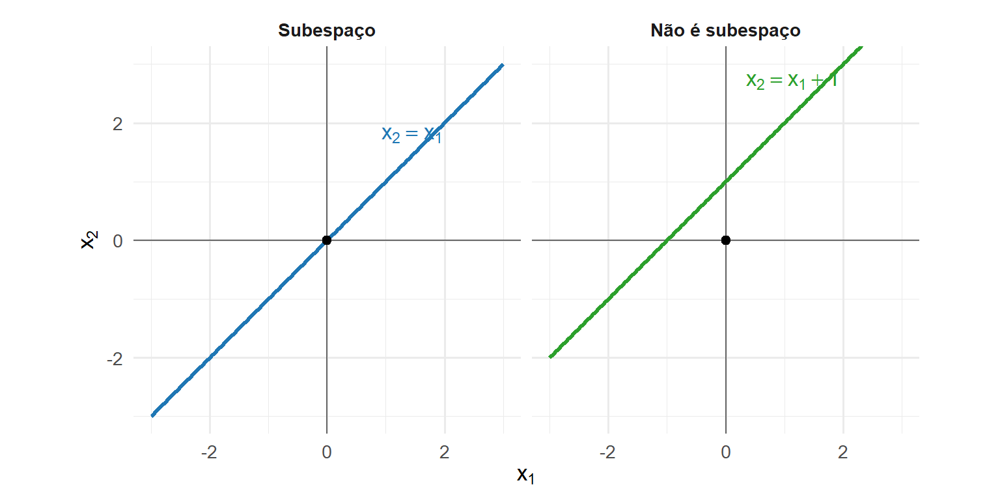
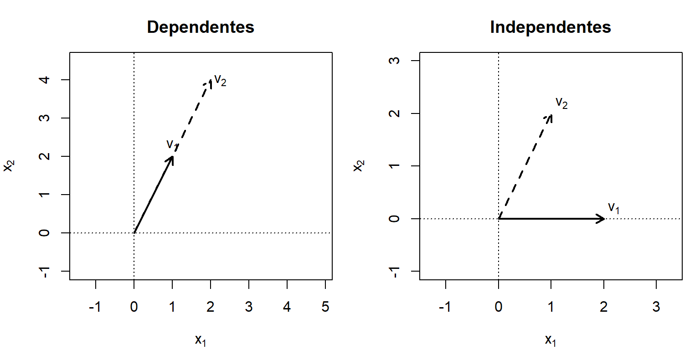
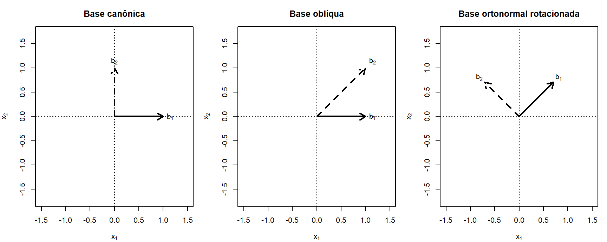
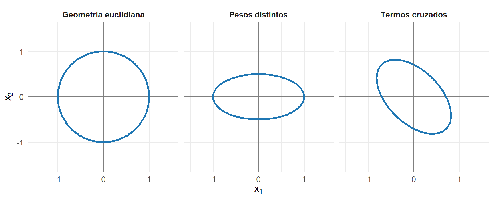
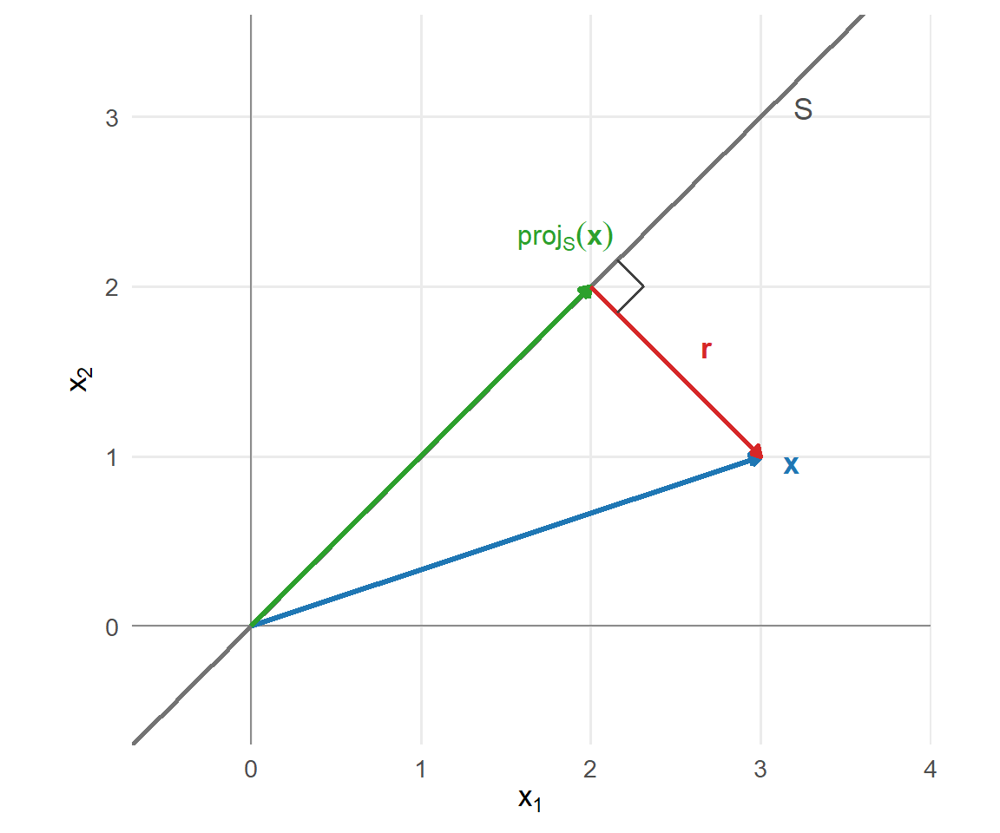

3 Espaços vetoriais, bases e projeções
Os capítulos anteriores apresentaram a representação vetorial dos dados e as operações matriciais utilizadas para manipulá-los. Neste capítulo, os vetores são estudados como elementos de conjuntos que preservam as operações de adição e multiplicação por escalar.
Essa estrutura permite identificar subespaços, verificar relações de dependência linear e representar um espaço por meio de uma base. O posto de uma matriz será interpretado a partir das dimensões de seus espaços fundamentais.
A parte final do capítulo desenvolve a projeção ortogonal. Essa operação decompõe um vetor em uma componente pertencente a um subespaço e uma componente ortogonal, fornecendo a interpretação geométrica dos problemas de melhor aproximação e mínimos quadrados.
3.1 Espaços, subespaços e geração
Um espaço vetorial é um conjunto no qual a soma de vetores e a multiplicação por escalares permanecem definidas e satisfazem propriedades algébricas específicas.
Definição 3.1 (Espaço vetorial) Um conjunto não vazio \(V\) é um espaço vetorial real quando estão definidas:
- a soma \(\mathbf{x}+\mathbf{y}\in V\), para \(\mathbf{x},\mathbf{y}\in V\);
- a multiplicação \(\alpha\mathbf{x}\in V\), para \(\alpha\in\mathbb{R}\) e \(\mathbf{x}\in V\);
e, para quaisquer \(\mathbf{x},\mathbf{y},\mathbf{z}\in V\) e \(\alpha,\beta\in\mathbb{R}\), são satisfeitas as propriedades
\[ \mathbf{x}+\mathbf{y} = \mathbf{y}+\mathbf{x}, \]
\[ (\mathbf{x}+\mathbf{y})+\mathbf{z} = \mathbf{x}+(\mathbf{y}+\mathbf{z}), \]
\[ \mathbf{x}+\mathbf{0} = \mathbf{x}, \]
\[ \mathbf{x}+(-\mathbf{x}) = \mathbf{0}, \]
\[ \alpha(\mathbf{x}+\mathbf{y}) = \alpha\mathbf{x}+\alpha\mathbf{y}, \]
\[ (\alpha+\beta)\mathbf{x} = \alpha\mathbf{x}+\beta\mathbf{x}, \]
\[ \alpha(\beta\mathbf{x}) = (\alpha\beta)\mathbf{x} \]
e
\[ 1\mathbf{x} = \mathbf{x}. \]
O espaço \(\mathbb{R}^p\), com as operações usuais, é um espaço vetorial. O vetor nulo é
\[ \mathbf{0} = \begin{bmatrix} 0\\ \vdots\\ 0 \end{bmatrix}, \]
e o inverso aditivo de
\[ \mathbf{x} = \begin{bmatrix} x_1\\ \vdots\\ x_p \end{bmatrix} \]
é
\[ -\mathbf{x} = \begin{bmatrix} -x_1\\ \vdots\\ -x_p \end{bmatrix}. \]
O conjunto de todas as matrizes reais de dimensão \(m\times n\),
\[ \mathbb{R}^{m\times n}, \]
também é um espaço vetorial com as operações usuais de soma e multiplicação por escalar.
3.1.1 Subespaços vetoriais
Um subconjunto de um espaço vetorial pode preservar a estrutura das operações.
Definição 3.2 (Subespaço vetorial) Seja \(V\) um espaço vetorial. Um subconjunto não vazio \(W\subseteq V\) é um subespaço vetorial de \(V\) quando, para quaisquer \(\mathbf{x},\mathbf{y}\in W\) e \(\alpha\in\mathbb{R}\),
\[ \mathbf{x}+\mathbf{y} \in W \]
e
\[ \alpha\mathbf{x} \in W. \]
As duas condições garantem que toda combinação linear de vetores de \(W\) também pertence a \(W\).
Teorema 3.1 (Critério de subespaço) Um subconjunto não vazio \(W\subseteq V\) é um subespaço vetorial se, e somente se,
\[ \alpha\mathbf{x} + \beta\mathbf{y} \in W \]
para quaisquer \(\mathbf{x},\mathbf{y}\in W\) e \(\alpha,\beta\in\mathbb{R}\). (Meyer, 2023)
O vetor nulo pertence a todo subespaço. De fato, para qualquer \(\mathbf{x}\in W\),
\[ 0\mathbf{x} = \mathbf{0} \in W. \]
Exemplo 3.1 (Reta que é um subespaço) Considere
\[ W = \left\{ \begin{bmatrix} t\\ t \end{bmatrix} : t\in\mathbb{R} \right\} \subseteq \mathbb{R}^2. \]
Se
\[ \mathbf{x} = \begin{bmatrix} t_1\\ t_1 \end{bmatrix} \quad\text{e}\quad \mathbf{y} = \begin{bmatrix} t_2\\ t_2 \end{bmatrix} \]
pertencem a \(W\), então
\[ \alpha\mathbf{x} + \beta\mathbf{y} = \begin{bmatrix} \alpha t_1+\beta t_2\\ \alpha t_1+\beta t_2 \end{bmatrix} \in W. \]
Portanto, \(W\) é um subespaço de \(\mathbb{R}^2\).
Uma reta que não passa pela origem não é um subespaço.
Exemplo 3.2 (Reta que não é um subespaço) Considere
\[ S = \left\{ \begin{bmatrix} t\\ t+1 \end{bmatrix} : t\in\mathbb{R} \right\}. \]
O vetor nulo não pertence a \(S\). Portanto, \(S\) não é um subespaço de \(\mathbb{R}^2\).
O conjunto \(S\) é uma translação do subespaço \(W\) e constitui um conjunto afim.
A Figura 3.1 compara uma reta que passa pela origem com uma reta afim paralela.
A reta do primeiro painel contém a origem e é fechada em relação às combinações lineares. A reta do segundo painel não contém a origem.
3.1.2 Subespaço gerado
As combinações lineares de um conjunto de vetores formam um subespaço.
Definição 3.3 (Subespaço gerado) Sejam
\[ \mathbf{v}_1,\mathbf{v}_2,\ldots,\mathbf{v}_k \in V. \]
O subespaço gerado por esses vetores é
\[ \operatorname{span} \{ \mathbf{v}_1,\ldots,\mathbf{v}_k \} = \left\{ \alpha_1\mathbf{v}_1 + \cdots + \alpha_k\mathbf{v}_k : \alpha_1,\ldots,\alpha_k\in\mathbb{R} \right\}. \]
Esse conjunto também é denominado envoltória linear dos vetores.
O subespaço gerado é o menor subespaço que contém todos os vetores \(\mathbf{v}_1,\ldots,\mathbf{v}_k\).
Exemplo 3.3 (Subespaço gerado por um vetor) Considere
\[ \mathbf{v} = \begin{bmatrix} 1\\ 2 \end{bmatrix}. \]
O conjunto
\[ \operatorname{span}\{\mathbf{v}\} = \left\{ \alpha \begin{bmatrix} 1\\ 2 \end{bmatrix} : \alpha\in\mathbb{R} \right\} \]
é uma reta que passa pela origem.
Exemplo 3.4 (Subespaço gerado por dois vetores) Considere
\[ \mathbf{v}_1 = \begin{bmatrix} 1\\ 0 \end{bmatrix}, \qquad \mathbf{v}_2 = \begin{bmatrix} 1\\ 1 \end{bmatrix}. \]
Uma combinação linear desses vetores é
\[ \alpha_1\mathbf{v}_1 + \alpha_2\mathbf{v}_2 = \begin{bmatrix} \alpha_1+\alpha_2\\ \alpha_2 \end{bmatrix}. \]
Para qualquer vetor
\[ \mathbf{x} = \begin{bmatrix} x_1\\ x_2 \end{bmatrix} \in \mathbb{R}^2, \]
basta escolher
\[ \alpha_2=x_2 \]
e
\[ \alpha_1=x_1-x_2. \]
Portanto,
\[ \operatorname{span} \{ \mathbf{v}_1,\mathbf{v}_2 \} = \mathbb{R}^2. \]
Um mesmo subespaço pode ser gerado por diferentes conjuntos de vetores. Alguns conjuntos podem conter vetores redundantes. A independência linear permite identificar quando um vetor acrescenta uma nova direção ao subespaço gerado.
3.2 Independência linear, bases e dimensão
Um conjunto de vetores pode gerar um subespaço mesmo quando contém vetores redundantes. A independência linear permite verificar se cada vetor acrescenta uma nova direção ao conjunto gerado.
3.2.1 Independência linear
Definição 3.4 (Independência linear) Os vetores
\[ \mathbf{v}_1,\mathbf{v}_2,\ldots,\mathbf{v}_k \in V \]
são linearmente independentes quando a igualdade
\[ \alpha_1\mathbf{v}_1 + \alpha_2\mathbf{v}_2 + \cdots + \alpha_k\mathbf{v}_k = \mathbf{0} \]
implica
\[ \alpha_1 = \alpha_2 = \cdots = \alpha_k = 0. \]
Quando existe uma solução em que pelo menos um coeficiente é diferente de zero, os vetores são linearmente dependentes.
A solução
\[ \alpha_1 = \alpha_2 = \cdots = \alpha_k = 0 \]
é denominada solução trivial. Um conjunto é linearmente independente quando a solução trivial é a única combinação linear que produz o vetor nulo.
Exemplo 3.5 (Vetores linearmente dependentes) Considere
\[ \mathbf{v}_1 = \begin{bmatrix} 1\\ 2 \end{bmatrix} \qquad \text{e} \qquad \mathbf{v}_2 = \begin{bmatrix} 2\\ 4 \end{bmatrix}. \]
Como
\[ \mathbf{v}_2 = 2\mathbf{v}_1, \]
tem-se
\[ 2\mathbf{v}_1 - \mathbf{v}_2 = \mathbf{0}. \]
Os coeficientes \(2\) e \(-1\) não são ambos nulos. Portanto, \(\mathbf{v}_1\) e \(\mathbf{v}_2\) são linearmente dependentes.
Além disso,
\[ \operatorname{span} \{ \mathbf{v}_1,\mathbf{v}_2 \} = \operatorname{span} \{ \mathbf{v}_1 \}. \]
O vetor \(\mathbf{v}_2\) não acrescenta uma nova direção ao subespaço gerado.
Exemplo 3.6 (Vetores linearmente independentes) Considere
\[ \mathbf{v}_1 = \begin{bmatrix} 1\\ 0 \end{bmatrix} \qquad \text{e} \qquad \mathbf{v}_2 = \begin{bmatrix} 1\\ 1 \end{bmatrix}. \]
Suponha que
\[ \alpha_1\mathbf{v}_1 + \alpha_2\mathbf{v}_2 = \mathbf{0}. \]
Então,
\[ \alpha_1 \begin{bmatrix} 1\\ 0 \end{bmatrix} + \alpha_2 \begin{bmatrix} 1\\ 1 \end{bmatrix} = \begin{bmatrix} \alpha_1+\alpha_2\\ \alpha_2 \end{bmatrix} = \begin{bmatrix} 0\\ 0 \end{bmatrix}. \]
A segunda equação fornece
\[ \alpha_2=0, \]
e a primeira fornece
\[ \alpha_1=0. \]
Portanto, os vetores são linearmente independentes.
A Figura 3.2 compara dois vetores dependentes com dois vetores independentes em \(\mathbb{R}^2\).

No primeiro painel, os vetores pertencem à mesma reta e geram um subespaço unidimensional. No segundo, os vetores determinam duas direções distintas e geram \(\mathbb{R}^2\).
3.2.2 Independência linear e sistemas homogêneos
Considere a matriz cujas colunas são os vetores analisados:
\[ \mathbf{A} = \begin{bmatrix} \mathbf{v}_1 & \mathbf{v}_2 & \cdots & \mathbf{v}_k \end{bmatrix}. \]
A combinação linear
\[ \alpha_1\mathbf{v}_1 + \cdots + \alpha_k\mathbf{v}_k = \mathbf{0} \]
pode ser escrita como
\[ \mathbf{A}\boldsymbol{\alpha} = \mathbf{0}, \]
em que
\[ \boldsymbol{\alpha} = \begin{bmatrix} \alpha_1\\ \vdots\\ \alpha_k \end{bmatrix}. \]
Teorema 3.2 (Independência linear e sistema homogêneo) As colunas de \(\mathbf{A}\) são linearmente independentes se, e somente se, o sistema
\[ \mathbf{A}\boldsymbol{\alpha} = \mathbf{0} \]
possui apenas a solução trivial
\[ \boldsymbol{\alpha} = \mathbf{0}. \]
Se \(\mathbf{A}\in\mathbb{R}^{p\times k}\), suas colunas são linearmente independentes quando
\[ \operatorname{posto}(\mathbf{A}) = k. \]
Consequentemente, não pode haver mais de \(p\) vetores linearmente independentes em \(\mathbb{R}^p\).
Teorema 3.3 (Propriedades da independência linear) Sejam \(\mathbf{v}_1,\ldots,\mathbf{v}_k\in V\).
Um conjunto que contém o vetor nulo é linearmente dependente.
Um conjunto formado por um único vetor é linearmente independente se, e somente se, esse vetor é diferente de zero.
Todo subconjunto de um conjunto linearmente independente também é linearmente independente.
Todo conjunto que contém um subconjunto linearmente dependente é linearmente dependente.
Se um vetor do conjunto pode ser escrito como combinação linear dos demais, o conjunto é linearmente dependente.
A última propriedade fornece uma interpretação direta da redundância.
Teorema 3.4 (Dependência linear e redundância) O conjunto
\[ \{ \mathbf{v}_1,\ldots,\mathbf{v}_k \} \]
é linearmente dependente se, e somente se, pelo menos um de seus vetores pode ser escrito como combinação linear dos demais.
Comprovação. Suponha que o conjunto seja linearmente dependente. Então existem coeficientes, não todos nulos, tais que
\[ \alpha_1\mathbf{v}_1 + \cdots + \alpha_k\mathbf{v}_k = \mathbf{0}. \]
Escolha um índice \(j\) para o qual \(\alpha_j\neq0\). Isolando \(\mathbf{v}_j\),
\[ \mathbf{v}_j = - \sum_{i\neq j} \frac{\alpha_i}{\alpha_j} \mathbf{v}_i. \]
Portanto, \(\mathbf{v}_j\) é combinação linear dos demais.
Reciprocamente, se um vetor é combinação linear dos demais, essa igualdade pode ser reorganizada como uma combinação linear não trivial que produz o vetor nulo. Logo, o conjunto é linearmente dependente.
A independência linear permite retirar vetores redundantes sem alterar o subespaço gerado. Um conjunto gerador sem redundâncias fornece uma base do subespaço.
3.2.3 Bases
Um conjunto gerador pode conter vetores redundantes. Quando os vetores geram o espaço e são linearmente independentes, obtém-se uma base.
Definição 3.5 (Base) Seja \(V\) um espaço vetorial. Um conjunto
\[ \mathcal{B} = \{ \mathbf{b}_1,\mathbf{b}_2,\ldots,\mathbf{b}_k \} \]
é uma base de \(V\) quando:
- os vetores \(\mathbf{b}_1,\ldots,\mathbf{b}_k\) são linearmente independentes;
- os vetores geram \(V\), isto é,
\[ \operatorname{span} \{ \mathbf{b}_1,\ldots,\mathbf{b}_k \} = V. \]
Uma base fornece um conjunto de vetores suficiente para gerar o espaço sem incluir redundâncias.
Exemplo 3.7 (Uma base de \(\mathbb{R}^2\)) Considere
\[ \mathbf{b}_1 = \begin{bmatrix} 1\\ 0 \end{bmatrix}, \qquad \mathbf{b}_2 = \begin{bmatrix} 1\\ 1 \end{bmatrix}. \]
Os vetores são linearmente independentes e geram \(\mathbb{R}^2\). Portanto,
\[ \mathcal{B} = \{ \mathbf{b}_1,\mathbf{b}_2 \} \]
é uma base de \(\mathbb{R}^2\).
Um mesmo espaço possui diferentes bases.
Exemplo 3.8 (Bases diferentes do mesmo espaço) Os conjuntos
\[ \mathcal{B}_1 = \left\{ \begin{bmatrix} 1\\ 0 \end{bmatrix}, \begin{bmatrix} 0\\ 1 \end{bmatrix} \right\} \]
e
\[ \mathcal{B}_2 = \left\{ \begin{bmatrix} 1\\ 1 \end{bmatrix}, \begin{bmatrix} 1\\ -1 \end{bmatrix} \right\} \]
são bases de \(\mathbb{R}^2\).
Os vetores de cada conjunto são linearmente independentes e geram todo o espaço.
3.2.4 Coordenadas em uma base
Uma base permite representar cada vetor por meio dos coeficientes de sua combinação linear.
Teorema 3.5 (Representação única em uma base) Se
\[ \mathcal{B} = \{ \mathbf{b}_1,\ldots,\mathbf{b}_k \} \]
é uma base de \(V\), então todo vetor \(\mathbf{x}\in V\) pode ser escrito de maneira única como
\[ \mathbf{x} = c_1\mathbf{b}_1 + \cdots + c_k\mathbf{b}_k. \]
Comprovação. Como \(\mathcal{B}\) gera \(V\), existem escalares \(c_1,\ldots,c_k\) tais que
\[ \mathbf{x} = c_1\mathbf{b}_1 + \cdots + c_k\mathbf{b}_k. \]
Suponha que também exista outra representação:
\[ \mathbf{x} = d_1\mathbf{b}_1 + \cdots + d_k\mathbf{b}_k. \]
Subtraindo as duas expressões,
\[ (c_1-d_1)\mathbf{b}_1 + \cdots + (c_k-d_k)\mathbf{b}_k = \mathbf{0}. \]
Como os vetores da base são linearmente independentes,
\[ c_i-d_i=0, \qquad i=1,\ldots,k. \]
Portanto,
\[ c_i=d_i, \qquad i=1,\ldots,k, \]
e a representação é única.
Definição 3.6 (Coordenadas em uma base) Se
\[ \mathbf{x} = c_1\mathbf{b}_1 + \cdots + c_k\mathbf{b}_k, \]
o vetor
\[ [\mathbf{x}]_{\mathcal{B}} = \begin{bmatrix} c_1\\ \vdots\\ c_k \end{bmatrix} \]
é o vetor de coordenadas de \(\mathbf{x}\) na base \(\mathcal{B}\).
Considere a matriz formada pelos vetores da base:
\[ \mathbf{B} = \begin{bmatrix} \mathbf{b}_1 & \cdots & \mathbf{b}_k \end{bmatrix}. \]
A representação de \(\mathbf{x}\) pode ser escrita como
\[ \mathbf{x} = \mathbf{B} [\mathbf{x}]_{\mathcal{B}}. \]
Exemplo 3.9 (Coordenadas de um vetor) Considere a base
\[ \mathcal{B} = \left\{ \begin{bmatrix} 1\\ 1 \end{bmatrix}, \begin{bmatrix} 1\\ -1 \end{bmatrix} \right\} \]
e o vetor
\[ \mathbf{x} = \begin{bmatrix} 4\\ 2 \end{bmatrix}. \]
Deseja-se determinar \(c_1\) e \(c_2\) tais que
\[ \begin{bmatrix} 4\\ 2 \end{bmatrix} = c_1 \begin{bmatrix} 1\\ 1 \end{bmatrix} + c_2 \begin{bmatrix} 1\\ -1 \end{bmatrix}. \]
Isso produz o sistema
\[ \begin{aligned} c_1+c_2 &= 4,\\ c_1-c_2 &= 2. \end{aligned} \]
Somando as equações,
\[ 2c_1=6, \]
de modo que
\[ c_1=3. \]
Consequentemente,
\[ c_2=1. \]
Logo,
\[ [\mathbf{x}]_{\mathcal{B}} = \begin{bmatrix} 3\\ 1 \end{bmatrix}. \]
As coordenadas dependem da base escolhida. O vetor permanece o mesmo, mas os coeficientes que o representam podem mudar.
3.2.5 Base canônica
Definição 3.7 (Base canônica) A base canônica de \(\mathbb{R}^p\) é
\[ \mathcal{E} = \{ \mathbf{e}_1,\ldots,\mathbf{e}_p \}, \]
em que \(\mathbf{e}_j\) possui valor \(1\) na posição \(j\) e valor \(0\) nas demais posições.
Em \(\mathbb{R}^3\),
\[ \mathbf{e}_1 = \begin{bmatrix} 1\\ 0\\ 0 \end{bmatrix}, \qquad \mathbf{e}_2 = \begin{bmatrix} 0\\ 1\\ 0 \end{bmatrix}, \qquad \mathbf{e}_3 = \begin{bmatrix} 0\\ 0\\ 1 \end{bmatrix}. \]
Para
\[ \mathbf{x} = \begin{bmatrix} x_1\\ x_2\\ x_3 \end{bmatrix}, \]
tem-se
\[ \mathbf{x} = x_1\mathbf{e}_1 + x_2\mathbf{e}_2 + x_3\mathbf{e}_3. \]
Assim, as coordenadas de \(\mathbf{x}\) na base canônica coincidem com suas componentes usuais.
3.2.6 Bases ortogonais e ortonormais
Definição 3.8 (Base ortogonal) Uma base
\[ \mathcal{B} = \{ \mathbf{b}_1,\ldots,\mathbf{b}_k \} \]
é ortogonal quando
\[ \mathbf{b}_i^\top\mathbf{b}_j = 0 \qquad \text{para} \qquad i\neq j. \]
Definição 3.9 (Base ortonormal) Uma base é ortonormal quando seus vetores são ortogonais e possuem norma igual a \(1\):
\[ \mathbf{b}_i^\top\mathbf{b}_j = \begin{cases} 1, & i=j,\\ 0, & i\neq j. \end{cases} \]
Utilizando o delta de Kronecker,
\[ \mathbf{b}_i^\top\mathbf{b}_j = \delta_{ij}. \]
Se
\[ \mathbf{Q} = \begin{bmatrix} \mathbf{b}_1 & \cdots & \mathbf{b}_k \end{bmatrix} \]
possui como colunas os vetores de uma base ortonormal, então
\[ \mathbf{Q}^\top\mathbf{Q} = \mathbf{I}_k. \]
Quando \(\mathbf{Q}\) é quadrada,
\[ \mathbf{Q}^{-1} = \mathbf{Q}^\top. \]
Essa propriedade foi apresentada no capítulo anterior para matrizes ortogonais.
Em uma base ortogonal, os coeficientes da representação de um vetor podem ser determinados separadamente.
Teorema 3.6 (Coordenadas em uma base ortogonal) Se
\[ \mathcal{B} = \{ \mathbf{b}_1,\ldots,\mathbf{b}_k \} \]
é uma base ortogonal de \(V\), então, para qualquer \(\mathbf{x}\in V\),
\[ \mathbf{x} = \sum_{j=1}^{k} \frac{ \mathbf{b}_j^\top\mathbf{x} }{ \mathbf{b}_j^\top\mathbf{b}_j } \mathbf{b}_j. \]
Se a base é ortonormal,
\[ \mathbf{x} = \sum_{j=1}^{k} \left( \mathbf{b}_j^\top\mathbf{x} \right) \mathbf{b}_j. \]
Comprovação. Escreva
\[ \mathbf{x} = c_1\mathbf{b}_1 + \cdots + c_k\mathbf{b}_k. \]
Multiplicando ambos os lados por \(\mathbf{b}_j^\top\),
\[ \mathbf{b}_j^\top\mathbf{x} = \sum_{i=1}^{k} c_i \mathbf{b}_j^\top\mathbf{b}_i. \]
Como a base é ortogonal, todos os termos com \(i\neq j\) são nulos. Assim,
\[ \mathbf{b}_j^\top\mathbf{x} = c_j \mathbf{b}_j^\top\mathbf{b}_j, \]
e
\[ c_j = \frac{ \mathbf{b}_j^\top\mathbf{x} }{ \mathbf{b}_j^\top\mathbf{b}_j }. \]
Quando a base é ortonormal,
\[ \mathbf{b}_j^\top\mathbf{b}_j = 1. \]
A Figura 3.3 compara diferentes bases de \(\mathbb{R}^2\).

A base canônica e a base rotacionada são ortonormais. Na base oblíqua, os vetores são linearmente independentes, mas não são ortogonais.
3.2.7 Dimensão
Definição 3.10 (Dimensão) Se um espaço vetorial \(V\) possui uma base com \(k\) vetores, sua dimensão é
\[ \dim(V)=k. \]
Todas as bases de um espaço vetorial de dimensão finita possuem o mesmo número de vetores.
Teorema 3.7 (Número de vetores de uma base) Se \(V\) é um espaço vetorial de dimensão finita, todas as bases de \(V\) possuem a mesma quantidade de vetores.
Como a base canônica de \(\mathbb{R}^p\) possui \(p\) vetores,
\[ \dim(\mathbb{R}^p) = p. \]
Exemplo 3.10 (Dimensão de subespaços) A reta
\[ W_1 = \operatorname{span} \left\{ \begin{bmatrix} 1\\ 2\\ 3 \end{bmatrix} \right\} \subseteq \mathbb{R}^3 \]
possui dimensão \(1\).
O plano
\[ W_2 = \operatorname{span} \left\{ \begin{bmatrix} 1\\ 0\\ 0 \end{bmatrix}, \begin{bmatrix} 0\\ 1\\ 0 \end{bmatrix} \right\} \subseteq \mathbb{R}^3 \]
possui dimensão \(2\).
O espaço \(\mathbb{R}^3\) possui dimensão \(3\).
Teorema 3.8 (Independência, geração e dimensão) Se \(\dim(V)=k\), então:
- qualquer conjunto com mais de \(k\) vetores é linearmente dependente;
- qualquer conjunto com menos de \(k\) vetores não gera \(V\);
- qualquer conjunto de \(k\) vetores linearmente independentes é uma base de \(V\);
- qualquer conjunto de \(k\) vetores que gera \(V\) é uma base de \(V\).
Esses resultados relacionam bases, independência e geração. Para uma matriz, essa relação será expressa pelas dimensões de seus espaços coluna, linha e nulo.
3.3 Espaços fundamentais de uma matriz
Uma matriz determina subespaços associados às suas colunas, linhas e soluções de sistemas homogêneos. Esses subespaços descrevem as direções que podem ser produzidas pela matriz e as direções que são anuladas por sua ação.
Considere
\[ \mathbf{A} \in \mathbb{R}^{m\times n}. \]
A matriz define a aplicação
\[ T_{\mathbf A}: \mathbb{R}^n \longrightarrow \mathbb{R}^m, \qquad T_{\mathbf A}(\mathbf{x}) = \mathbf{A}\mathbf{x}. \]
O estudo geral das transformações lineares será desenvolvido no capítulo seguinte. Nesta seção, essa aplicação será utilizada para definir o núcleo e a imagem de uma matriz.
3.3.1 Espaço nulo
Definição 3.11 (Espaço nulo) O espaço nulo ou núcleo de uma matriz
\[ \mathbf{A} \in \mathbb{R}^{m\times n} \]
é o conjunto
\[ \mathcal{N}(\mathbf{A}) = \left\{ \mathbf{x}\in\mathbb{R}^n: \mathbf{A}\mathbf{x} = \mathbf{0} \right\}. \]
O espaço nulo reúne todos os vetores do domínio que são enviados ao vetor nulo.
Teorema 3.9 (O espaço nulo é um subespaço) Para qualquer matriz
\[ \mathbf{A} \in \mathbb{R}^{m\times n}, \]
o conjunto
\[ \mathcal{N}(\mathbf{A}) \]
é um subespaço de \(\mathbb{R}^n\).
Comprovação. O vetor nulo pertence a \(\mathcal{N}(\mathbf{A})\), pois
\[ \mathbf{A}\mathbf{0} = \mathbf{0}. \]
Se
\[ \mathbf{x},\mathbf{y} \in \mathcal{N}(\mathbf{A}), \]
então
\[ \mathbf{A}\mathbf{x} = \mathbf{0} \qquad \text{e} \qquad \mathbf{A}\mathbf{y} = \mathbf{0}. \]
Para quaisquer \(\alpha,\beta\in\mathbb{R}\),
\[ \begin{aligned} \mathbf{A} ( \alpha\mathbf{x} + \beta\mathbf{y} ) &= \alpha\mathbf{A}\mathbf{x} + \beta\mathbf{A}\mathbf{y}\\ &= \alpha\mathbf{0} + \beta\mathbf{0}\\ &= \mathbf{0}. \end{aligned} \]
Logo,
\[ \alpha\mathbf{x} + \beta\mathbf{y} \in \mathcal{N}(\mathbf{A}), \]
e \(\mathcal{N}(\mathbf{A})\) é um subespaço.
A dimensão do espaço nulo é denominada nulidade da matriz:
\[ \operatorname{nul}(\mathbf{A}) = \dim \mathcal{N}(\mathbf{A}). \]
Exemplo 3.11 (Determinação do espaço nulo) Considere
\[ \mathbf{A} = \begin{bmatrix} 1 & 2 & -1\\ 2 & 4 & -2 \end{bmatrix}. \]
Para determinar \(\mathcal{N}(\mathbf{A})\), resolve-se
\[ \mathbf{A}\mathbf{x} = \mathbf{0}. \]
Assim,
\[ \begin{bmatrix} 1 & 2 & -1\\ 2 & 4 & -2 \end{bmatrix} \begin{bmatrix} x_1\\ x_2\\ x_3 \end{bmatrix} = \begin{bmatrix} 0\\ 0 \end{bmatrix}. \]
As duas equações são equivalentes, e o sistema reduz-se a
\[ x_1+2x_2-x_3=0. \]
Tomando
\[ x_2=s \qquad \text{e} \qquad x_3=t, \]
obtém-se
\[ x_1=-2s+t. \]
Portanto,
\[ \mathbf{x} = \begin{bmatrix} -2s+t\\ s\\ t \end{bmatrix} = s \begin{bmatrix} -2\\ 1\\ 0 \end{bmatrix} + t \begin{bmatrix} 1\\ 0\\ 1 \end{bmatrix}. \]
Logo,
\[ \mathcal{N}(\mathbf{A}) = \operatorname{span} \left\{ \begin{bmatrix} -2\\ 1\\ 0 \end{bmatrix}, \begin{bmatrix} 1\\ 0\\ 1 \end{bmatrix} \right\}. \]
Os dois vetores são linearmente independentes. Assim,
\[ \operatorname{nul}(\mathbf{A}) = 2. \]
Se
\[ \mathcal{N}(\mathbf{A}) = \{\mathbf{0}\}, \]
as colunas de \(\mathbf{A}\) são linearmente independentes. Nesse caso, o sistema homogêneo possui apenas a solução trivial.
3.3.2 Espaço coluna e imagem
Definição 3.12 (Espaço coluna) O espaço coluna de uma matriz
\[ \mathbf{A} = \begin{bmatrix} \mathbf{a}_1 & \mathbf{a}_2 & \cdots & \mathbf{a}_n \end{bmatrix} \in \mathbb{R}^{m\times n} \]
é o subespaço
\[ \mathcal{C}(\mathbf{A}) = \operatorname{span} \{ \mathbf{a}_1,\ldots,\mathbf{a}_n \} \subseteq \mathbb{R}^m. \]
O produto matriz-vetor pode ser escrito como
\[ \mathbf{A}\mathbf{x} = x_1\mathbf{a}_1 + \cdots + x_n\mathbf{a}_n. \]
Portanto, todo vetor produzido por \(\mathbf{A}\) é uma combinação linear de suas colunas.
Definição 3.13 (Imagem de uma matriz) A imagem da aplicação definida por \(\mathbf{A}\) é
\[ \operatorname{Im}(\mathbf{A}) = \left\{ \mathbf{A}\mathbf{x}: \mathbf{x}\in\mathbb{R}^n \right\}. \]
Como os vetores \(\mathbf{A}\mathbf{x}\) são exatamente as combinações lineares das colunas de \(\mathbf{A}\),
\[ \operatorname{Im}(\mathbf{A}) = \mathcal{C}(\mathbf{A}). \]
Teorema 3.10 (Consistência de um sistema linear) O sistema
\[ \mathbf{A}\mathbf{x} = \mathbf{b} \]
possui pelo menos uma solução se, e somente se,
\[ \mathbf{b} \in \mathcal{C}(\mathbf{A}). \]
Comprovação. Se o sistema possui uma solução \(\mathbf{x}\), então
\[ \mathbf{b} = \mathbf{A}\mathbf{x}, \]
de modo que \(\mathbf{b}\) é uma combinação linear das colunas de \(\mathbf{A}\). Portanto,
\[ \mathbf{b} \in \mathcal{C}(\mathbf{A}). \]
Reciprocamente, se
\[ \mathbf{b} \in \mathcal{C}(\mathbf{A}), \]
existem escalares \(x_1,\ldots,x_n\) tais que
\[ \mathbf{b} = x_1\mathbf{a}_1 + \cdots + x_n\mathbf{a}_n. \]
Definindo
\[ \mathbf{x} = \begin{bmatrix} x_1\\ \vdots\\ x_n \end{bmatrix}, \]
obtém-se
\[ \mathbf{A}\mathbf{x} = \mathbf{b}. \]
Exemplo 3.12 (Determinação do espaço coluna) Considere novamente
\[ \mathbf{A} = \begin{bmatrix} 1 & 2 & -1\\ 2 & 4 & -2 \end{bmatrix}. \]
As colunas são
\[ \mathbf{a}_1 = \begin{bmatrix} 1\\ 2 \end{bmatrix}, \qquad \mathbf{a}_2 = \begin{bmatrix} 2\\ 4 \end{bmatrix}, \qquad \mathbf{a}_3 = \begin{bmatrix} -1\\ -2 \end{bmatrix}. \]
Como
\[ \mathbf{a}_2 = 2\mathbf{a}_1 \]
e
\[ \mathbf{a}_3 = -\mathbf{a}_1, \]
tem-se
\[ \mathcal{C}(\mathbf{A}) = \operatorname{span} \left\{ \begin{bmatrix} 1\\ 2 \end{bmatrix} \right\}. \]
Logo,
\[ \dim \mathcal{C}(\mathbf{A}) = 1. \]
A dimensão do espaço coluna é igual ao posto da matriz:
\[ \dim \mathcal{C}(\mathbf{A}) = \operatorname{posto}(\mathbf{A}). \]
Uma base do espaço coluna deve ser formada por colunas da matriz original. As posições das colunas pivô podem ser identificadas por escalonamento, mas os vetores da base são retirados de \(\mathbf{A}\), e não da matriz escalonada.
3.3.3 Espaço linha
Definição 3.14 (Espaço linha) O espaço linha de uma matriz
\[ \mathbf{A} \in \mathbb{R}^{m\times n} \]
é o subespaço de \(\mathbb{R}^n\) gerado por suas linhas.
Equivalentemente,
\[ \mathcal{L}(\mathbf{A}) = \mathcal{C}(\mathbf{A}^{\top}). \]
O espaço linha e o espaço coluna possuem a mesma dimensão:
\[ \dim \mathcal{L}(\mathbf{A}) = \dim \mathcal{C}(\mathbf{A}) = \operatorname{posto}(\mathbf{A}). \]
Essa igualdade permite interpretar o posto tanto como o número máximo de colunas linearmente independentes quanto como o número máximo de linhas linearmente independentes.
Exemplo 3.13 (Determinação do espaço linha) Considere
\[ \mathbf{A} = \begin{bmatrix} 1 & 2 & -1\\ 2 & 4 & -2 \end{bmatrix}. \]
As linhas de \(\mathbf{A}\) são
\[ \mathbf{r}_1^{\top} = \begin{bmatrix} 1 & 2 & -1 \end{bmatrix} \]
e
\[ \mathbf{r}_2^{\top} = \begin{bmatrix} 2 & 4 & -2 \end{bmatrix}. \]
Como
\[ \mathbf{r}_2^{\top} = 2\mathbf{r}_1^{\top}, \]
tem-se
\[ \mathcal{L}(\mathbf{A}) = \operatorname{span} \left\{ \begin{bmatrix} 1\\ 2\\ -1 \end{bmatrix} \right\}. \]
Logo,
\[ \dim \mathcal{L}(\mathbf{A}) = 1. \]
As linhas não nulas de uma forma escalonada de \(\mathbf{A}\) formam uma base de \(\mathcal{L}(\mathbf{A})\). Diferentemente do espaço coluna, pode-se utilizar diretamente as linhas da matriz escalonada, pois as operações elementares por linhas preservam o espaço linha.
3.3.4 Espaço nulo à esquerda
Definição 3.15 (Espaço nulo à esquerda) O espaço nulo à esquerda de
\[ \mathbf{A} \in \mathbb{R}^{m\times n} \]
é definido por
\[ \mathcal{N}(\mathbf{A}^{\top}) = \left\{ \mathbf{y}\in\mathbb{R}^m: \mathbf{A}^{\top}\mathbf{y} = \mathbf{0} \right\}. \]
Um vetor \(\mathbf{y}\) pertence a \(\mathcal{N}(\mathbf{A}^{\top})\) quando é ortogonal a todas as colunas de \(\mathbf{A}\). De fato,
\[ \mathbf{A}^{\top}\mathbf{y} = \begin{bmatrix} \mathbf{a}_1^{\top}\mathbf{y}\\ \vdots\\ \mathbf{a}_n^{\top}\mathbf{y} \end{bmatrix}. \]
Assim,
\[ \mathbf{A}^{\top}\mathbf{y} = \mathbf{0} \]
se, e somente se,
\[ \mathbf{a}_j^{\top}\mathbf{y} = 0, \qquad j=1,\ldots,n. \]
Exemplo 3.14 (Determinação do espaço nulo à esquerda) Considere novamente
\[ \mathbf{A} = \begin{bmatrix} 1 & 2 & -1\\ 2 & 4 & -2 \end{bmatrix}. \]
Para determinar \(\mathcal{N}(\mathbf{A}^{\top})\), resolve-se
\[ \mathbf{A}^{\top}\mathbf{y} = \mathbf{0}. \]
Assim,
\[ \begin{bmatrix} 1 & 2\\ 2 & 4\\ -1 & -2 \end{bmatrix} \begin{bmatrix} y_1\\ y_2 \end{bmatrix} = \begin{bmatrix} 0\\ 0\\ 0 \end{bmatrix}. \]
O sistema reduz-se a
\[ y_1+2y_2=0. \]
Tomando
\[ y_2=t, \]
obtém-se
\[ y_1=-2t. \]
Portanto,
\[ \mathbf{y} = t \begin{bmatrix} -2\\ 1 \end{bmatrix}, \]
e
\[ \mathcal{N}(\mathbf{A}^{\top}) = \operatorname{span} \left\{ \begin{bmatrix} -2\\ 1 \end{bmatrix} \right\}. \]
Logo,
\[ \dim \mathcal{N}(\mathbf{A}^{\top}) = 1. \]
3.3.5 Teorema Posto–Nulidade
As dimensões do espaço nulo e do espaço coluna estão relacionadas ao número de colunas da matriz.
Teorema 3.11 (Teorema Posto–Nulidade) Se
\[ \mathbf{A} \in \mathbb{R}^{m\times n}, \]
então
\[ \operatorname{posto}(\mathbf{A}) + \operatorname{nul}(\mathbf{A}) = n. \] (Meyer, 2023)
Comprovação. Uma base de um subespaço de dimensão finita pode ser completada para formar uma base do espaço que o contém.
Considere uma base do espaço nulo,
\[ \{ \mathbf{v}_1,\ldots,\mathbf{v}_s \}, \]
em que
\[ s = \dim \mathcal{N}(\mathbf{A}). \]
Complete esse conjunto para obter uma base de \(\mathbb{R}^n\):
\[ \{ \mathbf{v}_1,\ldots,\mathbf{v}_s, \mathbf{w}_1,\ldots,\mathbf{w}_r \}. \]
Como essa base possui \(n\) vetores,
\[ s+r=n. \]
Todo vetor \(\mathbf{x}\in\mathbb{R}^n\) possui uma representação da forma
\[ \mathbf{x} = \sum_{i=1}^{s} \alpha_i\mathbf{v}_i + \sum_{j=1}^{r} \beta_j\mathbf{w}_j. \]
Como
\[ \mathbf{A}\mathbf{v}_i = \mathbf{0}, \qquad i=1,\ldots,s, \]
tem-se
\[ \mathbf{A}\mathbf{x} = \sum_{j=1}^{r} \beta_j \mathbf{A}\mathbf{w}_j. \]
Portanto,
\[ \mathbf{A}\mathbf{w}_1,\ldots, \mathbf{A}\mathbf{w}_r \]
geram \(\mathcal{C}(\mathbf{A})\).
Para verificar a independência linear, suponha que
\[ \sum_{j=1}^{r} \beta_j \mathbf{A}\mathbf{w}_j = \mathbf{0}. \]
Então,
\[ \mathbf{A} \left( \sum_{j=1}^{r} \beta_j\mathbf{w}_j \right) = \mathbf{0}, \]
de modo que
\[ \sum_{j=1}^{r} \beta_j\mathbf{w}_j \in \mathcal{N}(\mathbf{A}). \]
Esse vetor também pertence a
\[ \operatorname{span} \{ \mathbf{w}_1,\ldots,\mathbf{w}_r \}. \]
Como
\[ \{ \mathbf{v}_1,\ldots,\mathbf{v}_s, \mathbf{w}_1,\ldots,\mathbf{w}_r \} \]
é uma base de \(\mathbb{R}^n\), a interseção entre esses dois subespaços contém somente o vetor nulo. Assim,
\[ \beta_1 = \cdots = \beta_r = 0. \]
Logo,
\[ \mathbf{A}\mathbf{w}_1,\ldots, \mathbf{A}\mathbf{w}_r \]
formam uma base de \(\mathcal{C}(\mathbf{A})\). Portanto,
\[ r = \dim \mathcal{C}(\mathbf{A}) = \operatorname{posto}(\mathbf{A}). \]
Logo,
\[ \operatorname{posto}(\mathbf{A}) + \dim \mathcal{N}(\mathbf{A}) = n. \]
Aplicando o teorema a \(\mathbf{A}^{\top}\),
\[ \operatorname{posto}(\mathbf{A}^{\top}) + \dim \mathcal{N}(\mathbf{A}^{\top}) = m. \]
Como
\[ \operatorname{posto}(\mathbf{A}^{\top}) = \operatorname{posto}(\mathbf{A}), \]
obtém-se
\[ \operatorname{posto}(\mathbf{A}) + \dim \mathcal{N}(\mathbf{A}^{\top}) = m. \]
Para o exemplo utilizado nesta seção,
\[ \mathbf{A} = \begin{bmatrix} 1 & 2 & -1\\ 2 & 4 & -2 \end{bmatrix}, \]
tem-se
\[ \operatorname{posto}(\mathbf{A}) = 1, \]
\[ \dim \mathcal{N}(\mathbf{A}) = 2 \]
e
\[ \dim \mathcal{N}(\mathbf{A}^{\top}) = 1. \]
Portanto,
\[ 1+2=3 \]
e
\[ 1+1=2, \]
de acordo com as dimensões do domínio e do contradomínio.
3.3.6 Os quatro espaços fundamentais
Os quatro subespaços associados a
\[ \mathbf{A} \in \mathbb{R}^{m\times n} \]
são:
| Espaço | Definição | Subespaço de | Dimensão |
|---|---|---|---|
| Espaço coluna | \(\mathcal{C}(\mathbf{A})\) | \(\mathbb{R}^m\) | \(r\) |
| Espaço linha | \(\mathcal{L}(\mathbf{A})=\mathcal{C}(\mathbf{A}^{\top})\) | \(\mathbb{R}^n\) | \(r\) |
| Espaço nulo | \(\mathcal{N}(\mathbf{A})\) | \(\mathbb{R}^n\) | \(n-r\) |
| Espaço nulo à esquerda | \(\mathcal{N}(\mathbf{A}^{\top})\) | \(\mathbb{R}^m\) | \(m-r\) |
A Tabela 3.1 mostra que os espaços coluna e nulo à esquerda pertencem ao contradomínio \(\mathbb{R}^m\), enquanto os espaços linha e nulo pertencem ao domínio \(\mathbb{R}^n\).
3.3.7 Complemento ortogonal
Definição 3.16 (Complemento ortogonal) Seja \(S\) um subespaço de \(\mathbb{R}^p\). O complemento ortogonal de \(S\) é
\[ S^{\perp} = \left\{ \mathbf{x}\in\mathbb{R}^p: \mathbf{x}^{\top}\mathbf{s}=0 \text{ para todo } \mathbf{s}\in S \right\}. \]
3.3.8 Relações de ortogonalidade
O espaço nulo é ortogonal ao espaço linha.
Teorema 3.12 (Ortogonalidade entre espaço nulo e espaço linha) Para
\[ \mathbf{A} \in \mathbb{R}^{m\times n}, \]
tem-se
\[ \mathcal{N}(\mathbf{A}) = \mathcal{L}(\mathbf{A})^{\perp}. \]
Comprovação. Se
\[ \mathbf{x} \in \mathcal{N}(\mathbf{A}), \]
então
\[ \mathbf{A}\mathbf{x} = \mathbf{0}. \]
Cada componente de \(\mathbf{A}\mathbf{x}\) é o produto interno entre uma linha de \(\mathbf{A}\) e \(\mathbf{x}\). Portanto, \(\mathbf{x}\) é ortogonal a todas as linhas de \(\mathbf{A}\) e, consequentemente, a todo vetor de \(\mathcal{L}(\mathbf{A})\). Logo,
\[ \mathbf{x} \in \mathcal{L}(\mathbf{A})^{\perp}. \]
Assim,
\[ \mathcal{N}(\mathbf{A}) \subseteq \mathcal{L}(\mathbf{A})^{\perp}. \]
Reciprocamente, suponha que
\[ \mathbf{x} \in \mathcal{L}(\mathbf{A})^{\perp}. \]
Então \(\mathbf{x}\) é ortogonal a todas as linhas de \(\mathbf{A}\). Cada componente de \(\mathbf{A}\mathbf{x}\) é, portanto, igual a zero, de modo que
\[ \mathbf{A}\mathbf{x} = \mathbf{0}. \]
Logo,
\[ \mathbf{x} \in \mathcal{N}(\mathbf{A}), \]
e
\[ \mathcal{L}(\mathbf{A})^{\perp} \subseteq \mathcal{N}(\mathbf{A}). \]
Portanto,
\[ \mathcal{N}(\mathbf{A}) = \mathcal{L}(\mathbf{A})^{\perp}. \]
De forma análoga,
\[ \mathcal{N}(\mathbf{A}^{\top}) = \mathcal{C}(\mathbf{A})^{\perp}. \]
Essas relações produzem as decomposições ortogonais
\[ \mathbb{R}^n = \mathcal{L}(\mathbf{A}) \oplus \mathcal{N}(\mathbf{A}) \]
e
\[ \mathbb{R}^m = \mathcal{C}(\mathbf{A}) \oplus \mathcal{N}(\mathbf{A}^{\top}). \]
O símbolo \(\oplus\) indica que a soma é direta: cada vetor possui uma representação única como soma de componentes pertencentes aos dois subespaços.
Teorema 3.13 (Decomposições pelos espaços fundamentais) Se
\[ \mathbf{A} \in \mathbb{R}^{m\times n}, \]
então todo vetor \(\mathbf{x}\in\mathbb{R}^n\) pode ser escrito de maneira única como
\[ \mathbf{x} = \mathbf{x}_{\mathcal{L}} + \mathbf{x}_{\mathcal{N}}, \]
em que
\[ \mathbf{x}_{\mathcal{L}} \in \mathcal{L}(\mathbf{A}) \]
e
\[ \mathbf{x}_{\mathcal{N}} \in \mathcal{N}(\mathbf{A}). \]
Da mesma forma, todo vetor \(\mathbf{y}\in\mathbb{R}^m\) pode ser escrito de maneira única como
\[ \mathbf{y} = \mathbf{y}_{\mathcal{C}} + \mathbf{y}_{\mathcal{N}^{\top}}, \]
em que
\[ \mathbf{y}_{\mathcal{C}} \in \mathcal{C}(\mathbf{A}) \]
e
\[ \mathbf{y}_{\mathcal{N}^{\top}} \in \mathcal{N}(\mathbf{A}^{\top}). \] (Strang, 2023)
As decomposições ortogonais serão retomadas na construção de projeções sobre subespaços.
3.4 Produtos internos, bases ortonormais e matrizes de Gram
O produto interno euclidiano
\[ \langle \mathbf{x}, \mathbf{y} \rangle = \mathbf{x}^{\top}\mathbf{y} \]
define comprimentos, ângulos e ortogonalidade em \(\mathbb{R}^p\). Essas noções podem ser modificadas atribuindo pesos e relações diferentes às coordenadas.
3.4.1 Produtos internos induzidos por matrizes
Considere uma matriz simétrica positiva definida
\[ \mathbf{M} \in \mathbb{R}^{p\times p}. \]
Definição 3.17 (Produto interno induzido por uma matriz) O produto interno induzido por \(\mathbf{M}\) é definido por
\[ \langle \mathbf{x}, \mathbf{y} \rangle_{\mathbf{M}} = \mathbf{x}^{\top} \mathbf{M} \mathbf{y}, \qquad \mathbf{x},\mathbf{y}\in\mathbb{R}^p. \]
A simetria de \(\mathbf{M}\) garante que
\[ \langle \mathbf{x}, \mathbf{y} \rangle_{\mathbf{M}} = \langle \mathbf{y}, \mathbf{x} \rangle_{\mathbf{M}}, \]
pois
\[ \mathbf{x}^{\top} \mathbf{M} \mathbf{y} = \left( \mathbf{x}^{\top} \mathbf{M} \mathbf{y} \right)^{\top} = \mathbf{y}^{\top} \mathbf{M}^{\top} \mathbf{x} = \mathbf{y}^{\top} \mathbf{M} \mathbf{x}. \]
A definição positiva garante que
\[ \langle \mathbf{x}, \mathbf{x} \rangle_{\mathbf{M}} = \mathbf{x}^{\top} \mathbf{M} \mathbf{x} > 0 \]
para todo \(\mathbf{x}\neq\mathbf{0}\).
Teorema 3.14 (Propriedades do produto interno induzido) Para quaisquer
\[ \mathbf{x},\mathbf{y},\mathbf{z}\in\mathbb{R}^p \]
e \(\alpha,\beta\in\mathbb{R}\),
\[ \langle \mathbf{x}, \mathbf{y} \rangle_{\mathbf{M}} = \langle \mathbf{y}, \mathbf{x} \rangle_{\mathbf{M}}, \]
\[ \langle \alpha\mathbf{x} + \beta\mathbf{y}, \mathbf{z} \rangle_{\mathbf{M}} = \alpha \langle \mathbf{x}, \mathbf{z} \rangle_{\mathbf{M}} + \beta \langle \mathbf{y}, \mathbf{z} \rangle_{\mathbf{M}}, \]
e
\[ \langle \mathbf{x}, \mathbf{x} \rangle_{\mathbf{M}} > 0 \qquad \text{para} \qquad \mathbf{x}\neq\mathbf{0}. \] (Horn; Johnson, 2013)
Quando
\[ \mathbf{M} = \mathbf{I}_p, \]
recupera-se o produto interno euclidiano:
\[ \langle \mathbf{x}, \mathbf{y} \rangle_{\mathbf{I}_p} = \mathbf{x}^{\top}\mathbf{y}. \]
Exemplo 3.15 (Cálculo de um produto interno induzido) Considere
\[ \mathbf{M} = \begin{bmatrix} 2 & 1\\ 1 & 2 \end{bmatrix}, \qquad \mathbf{x} = \begin{bmatrix} 1\\ 2 \end{bmatrix} \]
e
\[ \mathbf{y} = \begin{bmatrix} 2\\ -1 \end{bmatrix}. \]
Então,
\[ \mathbf{M}\mathbf{y} = \begin{bmatrix} 2 & 1\\ 1 & 2 \end{bmatrix} \begin{bmatrix} 2\\ -1 \end{bmatrix} = \begin{bmatrix} 3\\ 0 \end{bmatrix}. \]
Logo,
\[ \langle \mathbf{x}, \mathbf{y} \rangle_{\mathbf{M}} = \mathbf{x}^{\top} \mathbf{M} \mathbf{y} = \begin{bmatrix} 1 & 2 \end{bmatrix} \begin{bmatrix} 3\\ 0 \end{bmatrix} = 3. \]
O produto interno euclidiano entre os mesmos vetores é
\[ \mathbf{x}^{\top}\mathbf{y} = 1(2)+2(-1) = 0. \]
Portanto, os vetores são ortogonais segundo o produto interno euclidiano, mas não segundo o produto interno induzido por \(\mathbf{M}\).
3.4.2 Norma e distância induzidas
Definição 3.18 (Norma induzida) A norma associada ao produto interno induzido por \(\mathbf{M}\) é
\[ \|\mathbf{x}\|_{\mathbf{M}} = \sqrt{ \langle \mathbf{x}, \mathbf{x} \rangle_{\mathbf{M}} } = \sqrt{ \mathbf{x}^{\top} \mathbf{M} \mathbf{x} }. \]
A distância associada é
\[ d_{\mathbf{M}} ( \mathbf{x}, \mathbf{y} ) = \| \mathbf{x}-\mathbf{y} \|_{\mathbf{M}}, \]
ou, equivalentemente,
\[ d_{\mathbf{M}} ( \mathbf{x}, \mathbf{y} ) = \sqrt{ ( \mathbf{x}-\mathbf{y} )^{\top} \mathbf{M} ( \mathbf{x}-\mathbf{y} ) }. \]
Quando \(\mathbf{M}=\mathbf{I}_p\), obtêm-se a norma e a distância euclidianas.
Exemplo 3.16 (Norma e distância induzidas) Considere
\[ \mathbf{M} = \begin{bmatrix} 1 & 0\\ 0 & 4 \end{bmatrix} \]
e
\[ \mathbf{x} = \begin{bmatrix} 2\\ 1 \end{bmatrix}. \]
A norma euclidiana de \(\mathbf{x}\) é
\[ \|\mathbf{x}\| = \sqrt{2^2+1^2} = \sqrt{5}. \]
A norma induzida por \(\mathbf{M}\) é
\[ \begin{aligned} \|\mathbf{x}\|_{\mathbf{M}} &= \sqrt{ \begin{bmatrix} 2 & 1 \end{bmatrix} \begin{bmatrix} 1 & 0\\ 0 & 4 \end{bmatrix} \begin{bmatrix} 2\\ 1 \end{bmatrix} }\\ &= \sqrt{8}. \end{aligned} \]
A segunda coordenada recebe peso maior na geometria definida por \(\mathbf{M}\).
3.4.3 Ortogonalidade induzida
Dois vetores \(\mathbf{x}\) e \(\mathbf{y}\) são ortogonais segundo \(\mathbf{M}\) quando
\[ \langle \mathbf{x}, \mathbf{y} \rangle_{\mathbf{M}} = \mathbf{x}^{\top} \mathbf{M} \mathbf{y} = 0. \]
Uma base
\[ \mathcal{B} = \{ \mathbf{b}_1,\ldots,\mathbf{b}_k \} \]
é \(\mathbf{M}\)-ortonormal quando
\[ \mathbf{b}_i^{\top} \mathbf{M} \mathbf{b}_j = \delta_{ij}. \]
Se
\[ \mathbf{B} = \begin{bmatrix} \mathbf{b}_1 & \cdots & \mathbf{b}_k \end{bmatrix}, \]
essa condição pode ser escrita como
\[ \mathbf{B}^{\top} \mathbf{M} \mathbf{B} = \mathbf{I}_k. \]
3.4.4 Interpretação por transformação de coordenadas
Como \(\mathbf{M}\) é simétrica positiva definida, existe uma matriz invertível \(\mathbf{C}\) tal que
\[ \mathbf{M} = \mathbf{C}^{\top}\mathbf{C}. \]
Assim,
\[ \begin{aligned} \langle \mathbf{x}, \mathbf{y} \rangle_{\mathbf{M}} &= \mathbf{x}^{\top} \mathbf{C}^{\top} \mathbf{C} \mathbf{y}\\ &= ( \mathbf{C}\mathbf{x} )^{\top} ( \mathbf{C}\mathbf{y} ). \end{aligned} \]
O produto interno induzido por \(\mathbf{M}\) equivale ao produto interno euclidiano aplicado aos vetores transformados
\[ \mathbf{C}\mathbf{x} \qquad \text{e} \qquad \mathbf{C}\mathbf{y}. \]
Da mesma forma,
\[ \|\mathbf{x}\|_{\mathbf{M}} = \|\mathbf{C}\mathbf{x}\|. \]
As curvas de nível
\[ \|\mathbf{x}\|_{\mathbf{M}} = 1 \]
satisfazem
\[ \mathbf{x}^{\top} \mathbf{M} \mathbf{x} = 1. \]
Na geometria euclidiana, essas curvas são circunferências quando \(\mathbf{M}=\mathbf{I}_2\) e elipses para outras matrizes positivas definidas.
A Figura 3.4 compara três geometrias em \(\mathbb{R}^2\).

A matriz identidade produz a circunferência euclidiana. Uma matriz diagonal com pesos distintos produz uma elipse alinhada aos eixos coordenados. Elementos fora da diagonal podem alterar a orientação da elipse.
Os produtos internos entre vários vetores podem ser organizados em uma matriz de Gram.
3.4.5 Matrizes de Gram
Os produtos internos entre um conjunto de vetores podem ser organizados em uma matriz.
Definição 3.19 (Matriz de Gram) Sejam
\[ \mathbf{v}_1,\ldots,\mathbf{v}_k \in \mathbb{R}^p \]
e
\[ \mathbf{V} = \begin{bmatrix} \mathbf{v}_1 & \mathbf{v}_2 & \cdots & \mathbf{v}_k \end{bmatrix} \in \mathbb{R}^{p\times k}. \]
A matriz de Gram dos vetores é
\[ \mathbf{G} = \mathbf{V}^{\top}\mathbf{V}. \]
Seu elemento na posição \((i,j)\) é
\[ g_{ij} = \mathbf{v}_i^{\top}\mathbf{v}_j. \]
A diagonal de \(\mathbf{G}\) contém os quadrados das normas:
\[ g_{ii} = \mathbf{v}_i^{\top}\mathbf{v}_i = \|\mathbf{v}_i\|^2. \]
Os elementos fora da diagonal contêm os produtos internos entre vetores distintos.
Quando \(\mathbf{v}_i\) e \(\mathbf{v}_j\) são não nulos,
\[ g_{ij} = \|\mathbf{v}_i\| \|\mathbf{v}_j\| \cos(\theta_{ij}). \]
Portanto, o produto interno depende tanto das normas quanto do ângulo entre os vetores.
Exemplo 3.17 (Construção de uma matriz de Gram) Considere
\[ \mathbf{v}_1 = \begin{bmatrix} 1\\ 1\\ 0 \end{bmatrix}, \qquad \mathbf{v}_2 = \begin{bmatrix} 1\\ 0\\ 1 \end{bmatrix} \]
e
\[ \mathbf{V} = \begin{bmatrix} 1 & 1\\ 1 & 0\\ 0 & 1 \end{bmatrix}. \]
A matriz de Gram é
\[ \begin{aligned} \mathbf{G} &= \mathbf{V}^{\top}\mathbf{V}\\ &= \begin{bmatrix} 1 & 1 & 0\\ 1 & 0 & 1 \end{bmatrix} \begin{bmatrix} 1 & 1\\ 1 & 0\\ 0 & 1 \end{bmatrix}\\ &= \begin{bmatrix} 2 & 1\\ 1 & 2 \end{bmatrix}. \end{aligned} \]
Os elementos diagonais são
\[ \|\mathbf{v}_1\|^2 = \|\mathbf{v}_2\|^2 = 2, \]
e o elemento fora da diagonal é
\[ \mathbf{v}_1^{\top}\mathbf{v}_2 = 1. \]
3.4.6 Propriedades da matriz de Gram
Teorema 3.15 (Propriedades da matriz de Gram) Para
\[ \mathbf{G} = \mathbf{V}^{\top}\mathbf{V}, \]
tem-se:
- \(\mathbf{G}\) é simétrica;
- \(\mathbf{G}\) é semidefinida positiva;
- \(\mathbf{G}\) é positiva definida se, e somente se, as colunas de \(\mathbf{V}\) são linearmente independentes;
- \(\operatorname{posto}(\mathbf{G})=\operatorname{posto}(\mathbf{V})\). (Horn; Johnson, 2013)
Comprovação. A simetria decorre de
\[ \mathbf{G}^{\top} = \left( \mathbf{V}^{\top}\mathbf{V} \right)^{\top} = \mathbf{V}^{\top}\mathbf{V} = \mathbf{G}. \]
Para qualquer \(\mathbf{c}\in\mathbb{R}^k\),
\[ \begin{aligned} \mathbf{c}^{\top}\mathbf{G}\mathbf{c} &= \mathbf{c}^{\top} \mathbf{V}^{\top} \mathbf{V} \mathbf{c}\\ &= ( \mathbf{V}\mathbf{c} )^{\top} ( \mathbf{V}\mathbf{c} )\\ &= \| \mathbf{V}\mathbf{c} \|^2\\ &\geq 0. \end{aligned} \]
Logo, \(\mathbf{G}\) é semidefinida positiva.
A forma quadrática é igual a zero quando
\[ \mathbf{V}\mathbf{c} = \mathbf{0}. \]
Assim, \(\mathbf{G}\) é positiva definida se, e somente se, o sistema homogêneo
\[ \mathbf{V}\mathbf{c} = \mathbf{0} \]
possui apenas a solução trivial, o que equivale à independência linear das colunas de \(\mathbf{V}\).
Além disso,
\[ \mathcal{N} ( \mathbf{V}^{\top}\mathbf{V} ) = \mathcal{N}(\mathbf{V}), \]
pois
\[ \mathbf{V}^{\top}\mathbf{V}\mathbf{c} = \mathbf{0} \]
implica
\[ \mathbf{c}^{\top} \mathbf{V}^{\top} \mathbf{V} \mathbf{c} = \| \mathbf{V}\mathbf{c} \|^2 = 0. \]
As duas matrizes possuem, portanto, a mesma nulidade. Pelo Teorema Posto–Nulidade,
\[ \operatorname{posto} ( \mathbf{V}^{\top}\mathbf{V} ) = \operatorname{posto}(\mathbf{V}). \] Reciprocamente, se
\[ \mathbf{V}\mathbf{c} = \mathbf{0}, \]
então
\[ \mathbf{V}^{\top}\mathbf{V}\mathbf{c} = \mathbf{V}^{\top}\mathbf{0} = \mathbf{0}. \]
Portanto,
\[ \mathcal{N} ( \mathbf{V}^{\top}\mathbf{V} ) = \mathcal{N}(\mathbf{V}). \]
Uma consequência é:
\[ \det ( \mathbf{V}^{\top}\mathbf{V} ) > 0 \]
se, e somente se, as colunas de \(\mathbf{V}\) são linearmente independentes.
Quando as colunas são dependentes,
\[ \det ( \mathbf{V}^{\top}\mathbf{V} ) = 0. \]
3.4.7 Matrizes de Gram e bases ortonormais
Se as colunas de \(\mathbf{Q}\) formam um conjunto ortonormal, então
\[ \mathbf{Q}^{\top}\mathbf{Q} = \mathbf{I}. \]
Portanto, a matriz de Gram de um conjunto ortonormal é a matriz identidade.
Para uma base ortogonal não normalizada,
\[ \mathbf{V}^{\top}\mathbf{V} = \operatorname{diag} \left( \|\mathbf{v}_1\|^2, \ldots, \|\mathbf{v}_k\|^2 \right). \]
Exemplo 3.18 (Matriz de Gram de uma base ortogonal) Considere
\[ \mathbf{v}_1 = \begin{bmatrix} 1\\ 1 \end{bmatrix} \qquad \text{e} \qquad \mathbf{v}_2 = \begin{bmatrix} 1\\ -1 \end{bmatrix}. \]
Como
\[ \mathbf{v}_1^{\top}\mathbf{v}_2 = 0, \]
os vetores são ortogonais.
A matriz de Gram é
\[ \mathbf{G} = \begin{bmatrix} 2 & 0\\ 0 & 2 \end{bmatrix}. \]
Normalizando os vetores,
\[ \mathbf{q}_1 = \frac{1}{\sqrt{2}} \begin{bmatrix} 1\\ 1 \end{bmatrix}, \qquad \mathbf{q}_2 = \frac{1}{\sqrt{2}} \begin{bmatrix} 1\\ -1 \end{bmatrix}, \]
obtém-se
\[ \mathbf{Q}^{\top}\mathbf{Q} = \mathbf{I}_2. \]
3.4.8 Produtos cruzados em uma matriz de dados
Considere uma matriz de dados
\[ \mathbf{X} \in \mathbb{R}^{n\times p}. \]
O produto
\[ \mathbf{X}^{\top}\mathbf{X} \in \mathbb{R}^{p\times p} \]
é a matriz de Gram das colunas de \(\mathbf{X}\). Seus elementos são
\[ \left( \mathbf{X}^{\top}\mathbf{X} \right)_{jk} = \sum_{i=1}^{n} x_{ij}x_{ik}. \]
Assim:
- os elementos diagonais são somas de quadrados das variáveis;
- os elementos fora da diagonal são produtos cruzados entre pares de variáveis.
O produto
\[ \mathbf{X}\mathbf{X}^{\top} \in \mathbb{R}^{n\times n} \]
é a matriz de Gram das linhas de \(\mathbf{X}\). Seus elementos são
\[ \left( \mathbf{X}\mathbf{X}^{\top} \right)_{ij} = \mathbf{x}_i^{\top}\mathbf{x}_j, \]
em que \(\mathbf{x}_i^{\top}\) e \(\mathbf{x}_j^{\top}\) representam duas observações.
A Tabela 3.2 resume as duas construções.
| Produto | Dimensão | Vetores comparados | Elemento genérico |
|---|---|---|---|
| \(\mathbf{X}^{\top}\mathbf{X}\) | \(p\times p\) | Colunas ou variáveis | \(\sum_{i=1}^{n}x_{ij}x_{ik}\) |
| \(\mathbf{X}\mathbf{X}^{\top}\) | \(n\times n\) | Linhas ou observações | \(\mathbf{x}_i^{\top}\mathbf{x}_j\) |
Quando as colunas da matriz de dados estão centradas, \(\mathbf{X}^{\top}\mathbf{X}\) reúne as somas de quadrados e produtos cruzados utilizadas na construção da matriz de covariâncias. Essa relação será retomada no capítulo sobre covariâncias e correlações.
As matrizes de Gram também aparecem na construção da projeção de um vetor sobre o espaço gerado pelas colunas de uma matriz.
3.5 Complementos ortogonais e projeções
A ortogonalidade permite decompor um vetor em duas componentes: uma pertencente a um subespaço e outra perpendicular a todos os vetores desse subespaço.
3.5.1 Propriedades do Completo ortogonal
O complemento ortogonal reúne os vetores perpendiculares a todo o subespaço, e não somente a um conjunto particular de seus vetores.
Se
\[ S = \operatorname{span} \{ \mathbf{s}_1,\ldots,\mathbf{s}_k \}, \]
então basta verificar a ortogonalidade em relação aos vetores geradores:
\[ S^{\perp} = \left\{ \mathbf{x}\in\mathbb{R}^p: \mathbf{s}_j^{\top}\mathbf{x}=0, \quad j=1,\ldots,k \right\}. \]
Teorema 3.16 (O complemento ortogonal é um subespaço) Se \(S\) é um subespaço de \(\mathbb{R}^p\), então \(S^{\perp}\) também é um subespaço de \(\mathbb{R}^p\).
Comprovação. O vetor nulo pertence a \(S^{\perp}\), pois
\[ \mathbf{0}^{\top}\mathbf{s}=0 \]
para todo \(\mathbf{s}\in S\).
Se
\[ \mathbf{x},\mathbf{y}\in S^{\perp}, \]
então, para quaisquer \(\alpha,\beta\in\mathbb{R}\) e \(\mathbf{s}\in S\),
\[ \begin{aligned} ( \alpha\mathbf{x} + \beta\mathbf{y} )^{\top} \mathbf{s} &= \alpha\mathbf{x}^{\top}\mathbf{s} + \beta\mathbf{y}^{\top}\mathbf{s}\\ &= 0. \end{aligned} \]
Portanto,
\[ \alpha\mathbf{x} + \beta\mathbf{y} \in S^{\perp}. \]
Exemplo 3.19 (Complemento ortogonal de uma reta) Considere
\[ S = \operatorname{span} \left\{ \begin{bmatrix} 1\\ 2 \end{bmatrix} \right\} \subseteq \mathbb{R}^2. \]
Um vetor
\[ \mathbf{x} = \begin{bmatrix} x_1\\ x_2 \end{bmatrix} \]
pertence a \(S^{\perp}\) quando
\[ \begin{bmatrix} 1 & 2 \end{bmatrix} \begin{bmatrix} x_1\\ x_2 \end{bmatrix} = 0. \]
Assim,
\[ x_1+2x_2=0. \]
Tomando \(x_2=t\), obtém-se
\[ x_1=-2t. \]
Logo,
\[ S^{\perp} = \operatorname{span} \left\{ \begin{bmatrix} -2\\ 1 \end{bmatrix} \right\}. \]
3.5.2 Dimensão do complemento ortogonal
Teorema 3.17 (Dimensão do complemento ortogonal) Se \(S\) é um subespaço de \(\mathbb{R}^p\), então
\[ \dim(S) + \dim(S^{\perp}) = p. \]
Se
\[ \dim(S)=k, \]
então
\[ \dim(S^{\perp}) = p-k. \]
Além disso,
\[ S\cap S^{\perp} = \{\mathbf{0}\}. \]
De fato, se \(\mathbf{x}\in S\cap S^{\perp}\), então \(\mathbf{x}\) é ortogonal a todos os vetores de \(S\), inclusive a si próprio. Portanto,
\[ \mathbf{x}^{\top}\mathbf{x} = \|\mathbf{x}\|^2 = 0, \]
o que implica
\[ \mathbf{x} = \mathbf{0}. \]
Em espaços vetoriais de dimensão finita,
\[ \left( S^{\perp} \right)^{\perp} = S. \]
3.5.3 Decomposição ortogonal
Teorema 3.18 (Decomposição ortogonal) Se \(S\) é um subespaço de \(\mathbb{R}^p\), então todo vetor \(\mathbf{x}\in\mathbb{R}^p\) pode ser escrito de maneira única como
\[ \mathbf{x} = \mathbf{x}_S + \mathbf{x}_{S^{\perp}}, \]
em que
\[ \mathbf{x}_S\in S \]
e
\[ \mathbf{x}_{S^{\perp}}\in S^{\perp}. \]
Equivalentemente,
\[ \mathbb{R}^p = S\oplus S^{\perp}. \]
Comprovação. Pelo Teorema 3.21, existe uma base ortonormal
\[ \{ \mathbf{q}_1,\ldots,\mathbf{q}_k \} \]
de \(S\).
Defina
\[ \mathbf{x}_S = \sum_{j=1}^{k} \left( \mathbf{q}_j^{\top}\mathbf{x} \right) \mathbf{q}_j \]
e
\[ \mathbf{x}_{S^{\perp}} = \mathbf{x}-\mathbf{x}_S. \]
Por construção,
\[ \mathbf{x}_S\in S. \]
Para cada \(i=1,\ldots,k\),
\[ \begin{aligned} \mathbf{q}_i^{\top} \mathbf{x}_{S^{\perp}} &= \mathbf{q}_i^{\top}\mathbf{x} - \sum_{j=1}^{k} \left( \mathbf{q}_j^{\top}\mathbf{x} \right) \mathbf{q}_i^{\top}\mathbf{q}_j\\ &= \mathbf{q}_i^{\top}\mathbf{x} - \mathbf{q}_i^{\top}\mathbf{x}\\ &= 0. \end{aligned} \]
Logo,
\[ \mathbf{x}_{S^{\perp}} \in S^{\perp}, \]
o que demonstra a existência da decomposição.
A componente \(\mathbf{x}_S\) é a projeção ortogonal de \(\mathbf{x}\) sobre \(S\). A componente
\[ \mathbf{x}_{S^{\perp}} = \mathbf{x}-\mathbf{x}_S \]
é o resíduo ortogonal.
A unicidade decorre da condição
\[ S\cap S^{\perp} = \{\mathbf{0}\}. \]
Suponha que existam duas decomposições:
\[ \mathbf{x} = \mathbf{s}_1+\mathbf{r}_1 = \mathbf{s}_2+\mathbf{r}_2, \]
com
\[ \mathbf{s}_1,\mathbf{s}_2\in S \]
e
\[ \mathbf{r}_1,\mathbf{r}_2\in S^{\perp}. \]
Então,
\[ \mathbf{s}_1-\mathbf{s}_2 = \mathbf{r}_2-\mathbf{r}_1. \]
O lado esquerdo pertence a \(S\), enquanto o lado direito pertence a \(S^{\perp}\). Portanto, ambos pertencem à interseção
\[ S\cap S^{\perp} = \{\mathbf{0}\}, \]
e
\[ \mathbf{s}_1=\mathbf{s}_2, \qquad \mathbf{r}_1=\mathbf{r}_2. \]
3.5.4 Projeção sobre uma direção
Considere o subespaço unidimensional
\[ S = \operatorname{span}\{\mathbf{u}\}, \]
em que \(\mathbf{u}\neq\mathbf{0}\).
A projeção de \(\mathbf{x}\) sobre \(S\) possui a forma
\[ \operatorname{proj}_{S}(\mathbf{x}) = \alpha\mathbf{u}. \]
O resíduo deve ser ortogonal a \(\mathbf{u}\):
\[ \mathbf{u}^{\top} \left( \mathbf{x}-\alpha\mathbf{u} \right) = 0. \]
Assim,
\[ \mathbf{u}^{\top}\mathbf{x} - \alpha\mathbf{u}^{\top}\mathbf{u} = 0, \]
e
\[ \alpha = \frac{ \mathbf{u}^{\top}\mathbf{x} }{ \mathbf{u}^{\top}\mathbf{u} }. \]
Definição 3.20 (Projeção sobre uma direção) A projeção ortogonal de \(\mathbf{x}\) sobre
\[ S = \operatorname{span}\{\mathbf{u}\} \]
é
\[ \operatorname{proj}_{S}(\mathbf{x}) = \frac{ \mathbf{u}^{\top}\mathbf{x} }{ \mathbf{u}^{\top}\mathbf{u} } \mathbf{u}. \]
Se \(\mathbf{u}\) possui norma igual a \(1\), então
\[ \operatorname{proj}_{S}(\mathbf{x}) = \left( \mathbf{u}^{\top}\mathbf{x} \right) \mathbf{u}. \]
Exemplo 3.20 (Projeção sobre uma reta) Considere
\[ \mathbf{x} = \begin{bmatrix} 3\\ 1 \end{bmatrix} \]
e
\[ S = \operatorname{span} \left\{ \begin{bmatrix} 1\\ 1 \end{bmatrix} \right\}. \]
Tomando
\[ \mathbf{u} = \begin{bmatrix} 1\\ 1 \end{bmatrix}, \]
tem-se
\[ \mathbf{u}^{\top}\mathbf{x} = 4 \]
e
\[ \mathbf{u}^{\top}\mathbf{u} = 2. \]
Portanto,
\[ \operatorname{proj}_{S}(\mathbf{x}) = \frac{4}{2} \begin{bmatrix} 1\\ 1 \end{bmatrix} = \begin{bmatrix} 2\\ 2 \end{bmatrix}. \]
O resíduo é
\[ \mathbf{r} = \mathbf{x} - \operatorname{proj}_{S}(\mathbf{x}) = \begin{bmatrix} 1\\ -1 \end{bmatrix}. \]
A ortogonalidade é verificada por
\[ \begin{bmatrix} 1 & 1 \end{bmatrix} \begin{bmatrix} 1\\ -1 \end{bmatrix} = 0. \]
Assim,
\[ \mathbf{x} = \begin{bmatrix} 2\\ 2 \end{bmatrix} + \begin{bmatrix} 1\\ -1 \end{bmatrix}, \]
com a primeira componente em \(S\) e a segunda em \(S^{\perp}\).
A Figura 3.5 representa essa decomposição.

A projeção pertence ao subespaço \(S\), enquanto o resíduo pertence a \(S^{\perp}\). Essa decomposição será estendida para subespaços gerados por vários vetores.
3.5.5 Projeção sobre um subespaço com base ortonormal
Considere um subespaço
\[ S = \operatorname{span} \{ \mathbf{q}_1,\ldots,\mathbf{q}_k \} \subseteq \mathbb{R}^p, \]
em que
\[ \{ \mathbf{q}_1,\ldots,\mathbf{q}_k \} \]
é uma base ortonormal de \(S\).
A projeção de \(\mathbf{x}\in\mathbb{R}^p\) sobre \(S\) é a soma das projeções sobre cada vetor da base:
\[ \operatorname{proj}_{S}(\mathbf{x}) = \sum_{j=1}^{k} \left( \mathbf{q}_j^{\top}\mathbf{x} \right) \mathbf{q}_j. \]
Se
\[ \mathbf{Q} = \begin{bmatrix} \mathbf{q}_1 & \cdots & \mathbf{q}_k \end{bmatrix} \in \mathbb{R}^{p\times k}, \]
então
\[ \mathbf{Q}^{\top}\mathbf{Q} = \mathbf{I}_k. \]
A soma das projeções pode ser escrita como
\[ \begin{aligned} \operatorname{proj}_{S}(\mathbf{x}) &= \mathbf{q}_1 \mathbf{q}_1^{\top} \mathbf{x} + \cdots + \mathbf{q}_k \mathbf{q}_k^{\top} \mathbf{x}\\ &= \left( \sum_{j=1}^{k} \mathbf{q}_j \mathbf{q}_j^{\top} \right) \mathbf{x}\\ &= \mathbf{Q} \mathbf{Q}^{\top} \mathbf{x}. \end{aligned} \]
Teorema 3.19 (Projeção sobre uma base ortonormal) Se as colunas de
\[ \mathbf{Q} \in \mathbb{R}^{p\times k} \]
formam uma base ortonormal de \(S\), então
\[ \operatorname{proj}_{S}(\mathbf{x}) = \mathbf{Q} \mathbf{Q}^{\top} \mathbf{x}. \]
A matriz de projeção sobre \(S\) é
\[ \mathbf{P}_{S} = \mathbf{Q} \mathbf{Q}^{\top}. \] (Meyer, 2023)
O vetor
\[ \mathbf{Q}^{\top}\mathbf{x} \]
contém as coordenadas da projeção de \(\mathbf{x}\) na base ortonormal de \(S\). A multiplicação por \(\mathbf{Q}\) reconstrói o vetor projetado no espaço original.
Exemplo 3.21 (Projeção sobre um plano) Considere o subespaço
\[ S = \operatorname{span} \left\{ \begin{bmatrix} 1\\ 0\\ 0 \end{bmatrix}, \begin{bmatrix} 0\\ 1\\ 0 \end{bmatrix} \right\} \subseteq \mathbb{R}^3. \]
Uma base ortonormal de \(S\) é formada por
\[ \mathbf{q}_1 = \begin{bmatrix} 1\\ 0\\ 0 \end{bmatrix} \qquad \text{e} \qquad \mathbf{q}_2 = \begin{bmatrix} 0\\ 1\\ 0 \end{bmatrix}. \]
Assim,
\[ \mathbf{Q} = \begin{bmatrix} 1 & 0\\ 0 & 1\\ 0 & 0 \end{bmatrix}. \]
A matriz de projeção é
\[ \begin{aligned} \mathbf{P}_{S} &= \mathbf{Q}\mathbf{Q}^{\top}\\ &= \begin{bmatrix} 1 & 0\\ 0 & 1\\ 0 & 0 \end{bmatrix} \begin{bmatrix} 1 & 0 & 0\\ 0 & 1 & 0 \end{bmatrix}\\ &= \begin{bmatrix} 1 & 0 & 0\\ 0 & 1 & 0\\ 0 & 0 & 0 \end{bmatrix}. \end{aligned} \]
Para
\[ \mathbf{x} = \begin{bmatrix} 2\\ -1\\ 3 \end{bmatrix}, \]
tem-se
\[ \operatorname{proj}_{S}(\mathbf{x}) = \mathbf{P}_{S}\mathbf{x} = \begin{bmatrix} 2\\ -1\\ 0 \end{bmatrix}. \]
O resíduo é
\[ \mathbf{r} = \mathbf{x} - \operatorname{proj}_{S}(\mathbf{x}) = \begin{bmatrix} 0\\ 0\\ 3 \end{bmatrix}, \]
que pertence a \(S^{\perp}\).
3.5.6 Projeção sobre o espaço coluna de uma matriz
Considere
\[ \mathbf{A} = \begin{bmatrix} \mathbf{a}_1 & \cdots & \mathbf{a}_k \end{bmatrix} \in \mathbb{R}^{p\times k}, \]
com colunas linearmente independentes.
O subespaço gerado pelas colunas de \(\mathbf{A}\) é
\[ S = \mathcal{C}(\mathbf{A}). \]
A projeção de \(\mathbf{x}\) sobre \(S\) deve possuir a forma
\[ \widehat{\mathbf{x}} = \mathbf{A}\mathbf{c}, \]
para algum vetor de coeficientes
\[ \mathbf{c} \in \mathbb{R}^k. \]
O resíduo
\[ \mathbf{r} = \mathbf{x} - \mathbf{A}\mathbf{c} \]
deve ser ortogonal a todas as colunas de \(\mathbf{A}\). Portanto,
\[ \mathbf{A}^{\top} \left( \mathbf{x} - \mathbf{A}\mathbf{c} \right) = \mathbf{0}. \]
Desenvolvendo,
\[ \mathbf{A}^{\top}\mathbf{x} - \mathbf{A}^{\top}\mathbf{A}\mathbf{c} = \mathbf{0}, \]
de modo que
\[ \mathbf{A}^{\top}\mathbf{A}\mathbf{c} = \mathbf{A}^{\top}\mathbf{x}. \]
Como as colunas de \(\mathbf{A}\) são linearmente independentes, a matriz de Gram
\[ \mathbf{A}^{\top}\mathbf{A} \]
é positiva definida e invertível. Assim,
\[ \mathbf{c} = \left( \mathbf{A}^{\top}\mathbf{A} \right)^{-1} \mathbf{A}^{\top}\mathbf{x}. \]
Substituindo em \(\widehat{\mathbf{x}}=\mathbf{A}\mathbf{c}\),
\[ \widehat{\mathbf{x}} = \mathbf{A} \left( \mathbf{A}^{\top}\mathbf{A} \right)^{-1} \mathbf{A}^{\top} \mathbf{x}. \]
Teorema 3.20 (Projeção sobre o espaço coluna) Se
\[ \mathbf{A} \in \mathbb{R}^{p\times k} \]
possui colunas linearmente independentes, a projeção ortogonal de \(\mathbf{x}\in\mathbb{R}^p\) sobre
\[ \mathcal{C}(\mathbf{A}) \]
é
\[ \operatorname{proj}_{\mathcal{C}(\mathbf{A})} (\mathbf{x}) = \mathbf{P}_{\mathbf{A}} \mathbf{x}, \]
em que
\[ \mathbf{P}_{\mathbf{A}} = \mathbf{A} \left( \mathbf{A}^{\top}\mathbf{A} \right)^{-1} \mathbf{A}^{\top}. \]
A matriz \(\mathbf{P}_{\mathbf{A}}\) depende apenas do subespaço gerado pelas colunas de \(\mathbf{A}\). Matrizes diferentes que possuem o mesmo espaço coluna produzem a mesma projeção ortogonal.
Quando as colunas de \(\mathbf{A}\) são ortonormais,
\[ \mathbf{A}^{\top}\mathbf{A} = \mathbf{I}_k, \]
e a fórmula reduz-se a
\[ \mathbf{P}_{\mathbf{A}} = \mathbf{A}\mathbf{A}^{\top}. \]
Teorema 3.21 (Existência de bases ortonormais) Todo subespaço de dimensão finita de \(\mathbb{R}^p\) possui uma base ortonormal.
A partir de qualquer base do subespaço, uma base ortonormal pode ser construída pelo processo de ortogonalização de Gram–Schmidt.
Exemplo 3.22 (Projeção utilizando uma base não ortogonal) Considere
\[ \mathbf{A} = \begin{bmatrix} 1 & 0\\ 1 & 1\\ 0 & 1 \end{bmatrix} \]
e
\[ \mathbf{x} = \begin{bmatrix} 1\\ 2\\ 3 \end{bmatrix}. \]
As colunas de \(\mathbf{A}\) são linearmente independentes. A matriz de Gram é
\[ \mathbf{A}^{\top}\mathbf{A} = \begin{bmatrix} 2 & 1\\ 1 & 2 \end{bmatrix}, \]
cuja inversa é
\[ \left( \mathbf{A}^{\top}\mathbf{A} \right)^{-1} = \frac{1}{3} \begin{bmatrix} 2 & -1\\ -1 & 2 \end{bmatrix}. \]
Além disso,
\[ \mathbf{A}^{\top}\mathbf{x} = \begin{bmatrix} 3\\ 5 \end{bmatrix}. \]
Os coeficientes da projeção são
\[ \begin{aligned} \mathbf{c} &= \left( \mathbf{A}^{\top}\mathbf{A} \right)^{-1} \mathbf{A}^{\top}\mathbf{x}\\ &= \frac{1}{3} \begin{bmatrix} 2 & -1\\ -1 & 2 \end{bmatrix} \begin{bmatrix} 3\\ 5 \end{bmatrix}\\ &= \frac{1}{3} \begin{bmatrix} 1\\ 7 \end{bmatrix}. \end{aligned} \]
Portanto,
\[ \begin{aligned} \operatorname{proj}_{\mathcal{C}(\mathbf{A})} (\mathbf{x}) &= \mathbf{A}\mathbf{c}\\ &= \begin{bmatrix} 1 & 0\\ 1 & 1\\ 0 & 1 \end{bmatrix} \begin{bmatrix} 1/3\\ 7/3 \end{bmatrix}\\ &= \begin{bmatrix} 1/3\\ 8/3\\ 7/3 \end{bmatrix}. \end{aligned} \]
O resíduo é
\[ \mathbf{r} = \mathbf{x} - \operatorname{proj}_{\mathcal{C}(\mathbf{A})} (\mathbf{x}) = \begin{bmatrix} 2/3\\ -2/3\\ 2/3 \end{bmatrix}. \]
A ortogonalidade pode ser verificada por
\[ \mathbf{A}^{\top}\mathbf{r} = \begin{bmatrix} 0\\ 0 \end{bmatrix}. \]
3.5.7 Propriedades da matriz de projeção
Teorema 3.22 (Propriedades da matriz de projeção) Se \(\mathbf{A}\) possui colunas linearmente independentes e
\[ \mathbf{P}_{\mathbf{A}} = \mathbf{A} \left( \mathbf{A}^{\top}\mathbf{A} \right)^{-1} \mathbf{A}^{\top}, \]
então:
\(\mathbf{P}_{\mathbf{A}}\) é simétrica;
\(\mathbf{P}_{\mathbf{A}}\) é idempotente;
\(\mathcal{C}(\mathbf{P}_{\mathbf{A}})=\mathcal{C}(\mathbf{A})\);
\(\mathcal{N}(\mathbf{P}_{\mathbf{A}}) = \mathcal{C}(\mathbf{A})^{\perp}\);
\(\operatorname{posto}(\mathbf{P}_{\mathbf{A}}) = \operatorname{posto}(\mathbf{A})\).
Comprovação. A simetria decorre de
\[ \begin{aligned} \mathbf{P}_{\mathbf{A}}^{\top} &= \left[ \mathbf{A} \left( \mathbf{A}^{\top}\mathbf{A} \right)^{-1} \mathbf{A}^{\top} \right]^{\top}\\ &= \mathbf{A} \left[ \left( \mathbf{A}^{\top}\mathbf{A} \right)^{-1} \right]^{\top} \mathbf{A}^{\top}\\ &= \mathbf{P}_{\mathbf{A}}, \end{aligned} \]
pois \(\mathbf{A}^{\top}\mathbf{A}\) e sua inversa são simétricas.
Para a idempotência,
\[ \begin{aligned} \mathbf{P}_{\mathbf{A}}^2 &= \mathbf{A} \left( \mathbf{A}^{\top}\mathbf{A} \right)^{-1} \mathbf{A}^{\top} \mathbf{A} \left( \mathbf{A}^{\top}\mathbf{A} \right)^{-1} \mathbf{A}^{\top}\\ &= \mathbf{A} \left( \mathbf{A}^{\top}\mathbf{A} \right)^{-1} \mathbf{A}^{\top}\\ &= \mathbf{P}_{\mathbf{A}}. \end{aligned} \]
Todo vetor projetado possui a forma
\[ \mathbf{P}_{\mathbf{A}}\mathbf{x} = \mathbf{A}\mathbf{c}, \]
e, portanto, pertence a \(\mathcal{C}(\mathbf{A})\).
Reciprocamente, se
\[ \mathbf{y} = \mathbf{A}\mathbf{c} \in \mathcal{C}(\mathbf{A}), \]
então
\[ \begin{aligned} \mathbf{P}_{\mathbf{A}}\mathbf{y} &= \mathbf{A} \left( \mathbf{A}^{\top}\mathbf{A} \right)^{-1} \mathbf{A}^{\top} \mathbf{A}\mathbf{c}\\ &= \mathbf{A}\mathbf{c}\\ &= \mathbf{y}. \end{aligned} \]
Logo,
\[ \mathcal{C}(\mathbf{P}_{\mathbf{A}}) = \mathcal{C}(\mathbf{A}). \]
Se
\[ \mathbf{x} \in \mathcal{C}(\mathbf{A})^{\perp}, \]
então
\[ \mathbf{A}^{\top}\mathbf{x} = \mathbf{0}, \]
e, consequentemente,
\[ \mathbf{P}_{\mathbf{A}}\mathbf{x} = \mathbf{0}. \]
Assim,
\[ \mathcal{N}(\mathbf{P}_{\mathbf{A}}) = \mathcal{C}(\mathbf{A})^{\perp}. \]
Como o espaço coluna de \(\mathbf{P}_{\mathbf{A}}\) coincide com o espaço coluna de \(\mathbf{A}\),
\[ \operatorname{posto}(\mathbf{P}_{\mathbf{A}}) = \operatorname{posto}(\mathbf{A}). \]
Reciprocamente, suponha que
\[ \mathbf{P}_{\mathbf{A}}\mathbf{x} = \mathbf{0}. \]
Como
\[ \mathbf{A}^{\top}\mathbf{P}_{\mathbf{A}} = \mathbf{A}^{\top}, \]
tem-se
\[ \mathbf{A}^{\top}\mathbf{x} = \mathbf{A}^{\top} \mathbf{P}_{\mathbf{A}} \mathbf{x} = \mathbf{0}. \]
Portanto, \(\mathbf{x}\) é ortogonal a todas as colunas de \(\mathbf{A}\) e
\[ \mathbf{x} \in \mathcal{C}(\mathbf{A})^{\perp}. \]
Logo,
\[ \mathcal{N}(\mathbf{P}_{\mathbf{A}}) = \mathcal{C}(\mathbf{A})^{\perp}. \]
A idempotência significa que projetar um vetor já projetado não produz alteração:
\[ \mathbf{P}_{\mathbf{A}} \left( \mathbf{P}_{\mathbf{A}}\mathbf{x} \right) = \mathbf{P}_{\mathbf{A}}\mathbf{x}. \]
3.5.8 Projeção sobre o complemento ortogonal
A componente residual de um vetor é obtida subtraindo sua projeção:
\[ \mathbf{r} = \mathbf{x} - \mathbf{P}_{\mathbf{A}}\mathbf{x}. \]
Defina
\[ \mathbf{M}_{\mathbf{A}} = \mathbf{I}_p - \mathbf{P}_{\mathbf{A}}. \]
Então,
\[ \mathbf{r} = \mathbf{M}_{\mathbf{A}}\mathbf{x}. \]
Definição 3.21 (Matriz de projeção residual) A matriz
\[ \mathbf{M}_{\mathbf{A}} = \mathbf{I}_p - \mathbf{P}_{\mathbf{A}} \]
é a matriz de projeção ortogonal sobre
\[ \mathcal{C}(\mathbf{A})^{\perp}. \]
A decomposição ortogonal de \(\mathbf{x}\) pode ser escrita como
\[ \mathbf{x} = \mathbf{P}_{\mathbf{A}}\mathbf{x} + \mathbf{M}_{\mathbf{A}}\mathbf{x}. \]
As duas componentes satisfazem
\[ \mathbf{P}_{\mathbf{A}}\mathbf{x} \in \mathcal{C}(\mathbf{A}) \]
e
\[ \mathbf{M}_{\mathbf{A}}\mathbf{x} \in \mathcal{C}(\mathbf{A})^{\perp}. \]
Além disso,
\[ \left( \mathbf{P}_{\mathbf{A}}\mathbf{x} \right)^{\top} \left( \mathbf{M}_{\mathbf{A}}\mathbf{x} \right) = 0. \]
Teorema 3.23 (Propriedades da matriz de projeção residual) Se
\[ \mathbf{M}_{\mathbf{A}} = \mathbf{I}_p - \mathbf{P}_{\mathbf{A}}, \]
então:
\(\mathbf{M}_{\mathbf{A}}\) é simétrica;
\(\mathbf{M}_{\mathbf{A}}\) é idempotente;
\(\mathbf{P}_{\mathbf{A}}\mathbf{M}_{\mathbf{A}}=\mathbf{0}\);
\(\mathbf{M}_{\mathbf{A}}\mathbf{P}_{\mathbf{A}}=\mathbf{0}\);
\(\mathcal{C}(\mathbf{M}_{\mathbf{A}}) = \mathcal{C}(\mathbf{A})^{\perp}\);
\(\mathcal{N}(\mathbf{M}_{\mathbf{A}}) = \mathcal{C}(\mathbf{A})\).
Comprovação. Como \(\mathbf{P}_{\mathbf{A}}\) é simétrica,
\[ \begin{aligned} \mathbf{M}_{\mathbf{A}}^{\top} &= \left( \mathbf{I}_p-\mathbf{P}_{\mathbf{A}} \right)^{\top}\\ &= \mathbf{I}_p-\mathbf{P}_{\mathbf{A}}^{\top}\\ &= \mathbf{I}_p-\mathbf{P}_{\mathbf{A}}\\ &= \mathbf{M}_{\mathbf{A}}. \end{aligned} \]
Portanto, \(\mathbf{M}_{\mathbf{A}}\) é simétrica.
Para verificar a idempotência,
\[ \begin{aligned} \mathbf{M}_{\mathbf{A}}^2 &= \left( \mathbf{I}_p-\mathbf{P}_{\mathbf{A}} \right)^2\\ &= \mathbf{I}_p - 2\mathbf{P}_{\mathbf{A}} + \mathbf{P}_{\mathbf{A}}^2\\ &= \mathbf{I}_p - \mathbf{P}_{\mathbf{A}}\\ &= \mathbf{M}_{\mathbf{A}}, \end{aligned} \]
pois
\[ \mathbf{P}_{\mathbf{A}}^2 = \mathbf{P}_{\mathbf{A}}. \]
Além disso,
\[ \begin{aligned} \mathbf{P}_{\mathbf{A}} \mathbf{M}_{\mathbf{A}} &= \mathbf{P}_{\mathbf{A}} \left( \mathbf{I}_p-\mathbf{P}_{\mathbf{A}} \right)\\ &= \mathbf{P}_{\mathbf{A}} - \mathbf{P}_{\mathbf{A}}^2\\ &= \mathbf{0}. \end{aligned} \]
De forma análoga,
\[ \begin{aligned} \mathbf{M}_{\mathbf{A}} \mathbf{P}_{\mathbf{A}} &= \left( \mathbf{I}_p-\mathbf{P}_{\mathbf{A}} \right) \mathbf{P}_{\mathbf{A}}\\ &= \mathbf{P}_{\mathbf{A}} - \mathbf{P}_{\mathbf{A}}^2\\ &= \mathbf{0}. \end{aligned} \]
Para qualquer \(\mathbf{x}\in\mathbb{R}^p\),
\[ \mathbf{P}_{\mathbf{A}} \mathbf{M}_{\mathbf{A}} \mathbf{x} = \mathbf{0}. \]
Assim,
\[ \mathbf{M}_{\mathbf{A}}\mathbf{x} \in \mathcal{N}(\mathbf{P}_{\mathbf{A}}). \]
Como
\[ \mathcal{N}(\mathbf{P}_{\mathbf{A}}) = \mathcal{C}(\mathbf{A})^{\perp}, \]
segue que
\[ \mathcal{C}(\mathbf{M}_{\mathbf{A}}) \subseteq \mathcal{C}(\mathbf{A})^{\perp}. \]
Reciprocamente, seja
\[ \mathbf{y} \in \mathcal{C}(\mathbf{A})^{\perp}. \]
Então,
\[ \mathbf{P}_{\mathbf{A}}\mathbf{y} = \mathbf{0}, \]
e
\[ \begin{aligned} \mathbf{M}_{\mathbf{A}}\mathbf{y} &= \left( \mathbf{I}_p-\mathbf{P}_{\mathbf{A}} \right) \mathbf{y}\\ &= \mathbf{y}. \end{aligned} \]
Portanto, \(\mathbf{y}\) pertence à imagem de \(\mathbf{M}_{\mathbf{A}}\), de modo que
\[ \mathcal{C}(\mathbf{A})^{\perp} \subseteq \mathcal{C}(\mathbf{M}_{\mathbf{A}}). \]
Logo,
\[ \mathcal{C}(\mathbf{M}_{\mathbf{A}}) = \mathcal{C}(\mathbf{A})^{\perp}. \]
Se
\[ \mathbf{x} \in \mathcal{C}(\mathbf{A}), \]
então
\[ \mathbf{P}_{\mathbf{A}}\mathbf{x} = \mathbf{x}. \]
Consequentemente,
\[ \begin{aligned} \mathbf{M}_{\mathbf{A}}\mathbf{x} &= \left( \mathbf{I}_p-\mathbf{P}_{\mathbf{A}} \right) \mathbf{x}\\ &= \mathbf{x}-\mathbf{x}\\ &= \mathbf{0}. \end{aligned} \]
Assim,
\[ \mathcal{C}(\mathbf{A}) \subseteq \mathcal{N}(\mathbf{M}_{\mathbf{A}}). \]
Reciprocamente, suponha que
\[ \mathbf{x} \in \mathcal{N}(\mathbf{M}_{\mathbf{A}}). \]
Então,
\[ \mathbf{M}_{\mathbf{A}}\mathbf{x} = \mathbf{0}, \]
isto é,
\[ \left( \mathbf{I}_p-\mathbf{P}_{\mathbf{A}} \right) \mathbf{x} = \mathbf{0}. \]
Portanto,
\[ \mathbf{x} = \mathbf{P}_{\mathbf{A}}\mathbf{x}. \]
Como
\[ \mathbf{P}_{\mathbf{A}}\mathbf{x} \in \mathcal{C}(\mathbf{A}), \]
segue que
\[ \mathbf{x} \in \mathcal{C}(\mathbf{A}). \]
Logo,
\[ \mathcal{N}(\mathbf{M}_{\mathbf{A}}) \subseteq \mathcal{C}(\mathbf{A}). \]
Portanto,
\[ \mathcal{N}(\mathbf{M}_{\mathbf{A}}) = \mathcal{C}(\mathbf{A}). \]
Quando \(\mathbf{A}\in\mathbb{R}^{p\times k}\) possui posto \(k\),
\[ \operatorname{posto} ( \mathbf{P}_{\mathbf{A}} ) = k \]
e
\[ \operatorname{posto} ( \mathbf{M}_{\mathbf{A}} ) = p-k. \]
3.5.9 Projeção como melhor aproximação
A projeção ortogonal é o vetor do subespaço que possui a menor distância até o vetor original.
Teorema 3.24 (Teorema da melhor aproximação) Seja \(S\) um subespaço de \(\mathbb{R}^p\) e seja
\[ \widehat{\mathbf{x}} = \operatorname{proj}_{S}(\mathbf{x}). \]
Então, para qualquer \(\mathbf{y}\in S\),
\[ \| \mathbf{x} - \widehat{\mathbf{x}} \| \leq \| \mathbf{x} - \mathbf{y} \|. \]
A igualdade ocorre se, e somente se,
\[ \mathbf{y} = \widehat{\mathbf{x}}. \] (Meyer, 2023)
Comprovação. Como
\[ \widehat{\mathbf{x}} \in S \]
e
\[ \mathbf{y} \in S, \]
tem-se
\[ \widehat{\mathbf{x}} - \mathbf{y} \in S. \]
O resíduo
\[ \mathbf{x} - \widehat{\mathbf{x}} \]
pertence a \(S^{\perp}\). Portanto,
\[ \mathbf{x} - \widehat{\mathbf{x}} \]
e
\[ \widehat{\mathbf{x}} - \mathbf{y} \]
são ortogonais.
Escreva
\[ \mathbf{x} - \mathbf{y} = \left( \mathbf{x} - \widehat{\mathbf{x}} \right) + \left( \widehat{\mathbf{x}} - \mathbf{y} \right). \]
Pelo Teorema de Pitágoras,
\[ \| \mathbf{x} - \mathbf{y} \|^2 = \| \mathbf{x} - \widehat{\mathbf{x}} \|^2 + \| \widehat{\mathbf{x}} - \mathbf{y} \|^2. \]
Como
\[ \| \widehat{\mathbf{x}} - \mathbf{y} \|^2 \geq 0, \]
segue que
\[ \| \mathbf{x} - \mathbf{y} \|^2 \geq \| \mathbf{x} - \widehat{\mathbf{x}} \|^2. \]
A igualdade ocorre somente quando
\[ \| \widehat{\mathbf{x}} - \mathbf{y} \|^2 = 0, \]
isto é, quando
\[ \mathbf{y} = \widehat{\mathbf{x}}. \]
A projeção é, portanto, a solução do problema
\[ \min_{\mathbf{y}\in S} \| \mathbf{x} - \mathbf{y} \|^2. \]
Quando
\[ S = \mathcal{C}(\mathbf{A}), \]
todo vetor de \(S\) possui a forma
\[ \mathbf{y} = \mathbf{A}\mathbf{c}. \]
Assim, o problema pode ser escrito como
\[ \min_{\mathbf{c}\in\mathbb{R}^k} \| \mathbf{x} - \mathbf{A}\mathbf{c} \|^2. \]
3.5.10 Projeções e mínimos quadrados
Considere
\[ \mathbf{A} \in \mathbb{R}^{m\times k} \]
e
\[ \mathbf{b} \in \mathbb{R}^m. \]
O sistema
\[ \mathbf{A}\boldsymbol{\beta} = \mathbf{b} \]
pode não possuir solução exata quando
\[ \mathbf{b} \notin \mathcal{C}(\mathbf{A}). \]
Nesse caso, procura-se um vetor
\[ \mathbf{A}\widehat{\boldsymbol{\beta}} \in \mathcal{C}(\mathbf{A}) \]
que minimize
\[ \| \mathbf{b} - \mathbf{A}\boldsymbol{\beta} \|^2. \]
Pelo Teorema 3.24,
\[ \mathbf{A}\widehat{\boldsymbol{\beta}} = \operatorname{proj}_{\mathcal{C}(\mathbf{A})} (\mathbf{b}). \]
O resíduo
\[ \widehat{\mathbf{e}} = \mathbf{b} - \mathbf{A}\widehat{\boldsymbol{\beta}} \]
deve ser ortogonal ao espaço coluna de \(\mathbf{A}\). Portanto,
\[ \mathbf{A}^{\top}\widehat{\mathbf{e}} = \mathbf{0}. \]
Substituindo o resíduo,
\[ \mathbf{A}^{\top} \left( \mathbf{b} - \mathbf{A}\widehat{\boldsymbol{\beta}} \right) = \mathbf{0}. \]
Logo,
\[ \mathbf{A}^{\top}\mathbf{A} \widehat{\boldsymbol{\beta}} = \mathbf{A}^{\top}\mathbf{b}. \]
Definição 3.22 (Equações normais) As equações
\[ \mathbf{A}^{\top}\mathbf{A} \widehat{\boldsymbol{\beta}} = \mathbf{A}^{\top}\mathbf{b} \]
são denominadas equações normais do problema de mínimos quadrados.
Se as colunas de \(\mathbf{A}\) são linearmente independentes, então
\[ \mathbf{A}^{\top}\mathbf{A} \]
é invertível e a solução é única:
\[ \widehat{\boldsymbol{\beta}} = \left( \mathbf{A}^{\top}\mathbf{A} \right)^{-1} \mathbf{A}^{\top}\mathbf{b}. \]
O vetor ajustado é
\[ \widehat{\mathbf{b}} = \mathbf{A}\widehat{\boldsymbol{\beta}} = \mathbf{P}_{\mathbf{A}}\mathbf{b}, \]
e o vetor de resíduos é
\[ \widehat{\mathbf{e}} = \mathbf{M}_{\mathbf{A}}\mathbf{b}. \]
Teorema 3.25 (Decomposição de mínimos quadrados) No problema de mínimos quadrados,
\[ \mathbf{b} = \widehat{\mathbf{b}} + \widehat{\mathbf{e}}, \]
em que
\[ \widehat{\mathbf{b}} \in \mathcal{C}(\mathbf{A}) \]
e
\[ \widehat{\mathbf{e}} \in \mathcal{C}(\mathbf{A})^{\perp}. \]
Consequentemente,
\[ \| \mathbf{b} \|^2 = \| \widehat{\mathbf{b}} \|^2 + \| \widehat{\mathbf{e}} \|^2. \] (Golub; Van Loan, 2013)
Se as colunas de \(\mathbf{A}\) são linearmente dependentes, os coeficientes que resolvem as equações normais podem não ser únicos. A projeção
\[ \widehat{\mathbf{b}} = \operatorname{proj}_{\mathcal{C}(\mathbf{A})} (\mathbf{b}) \]
permanece única, pois depende apenas do espaço coluna.
Nesse caso, a matriz de projeção pode ser escrita como
\[ \mathbf{P}_{\mathbf{A}} = \mathbf{A}\mathbf{A}^{+}, \]
em que \(\mathbf{A}^{+}\) é a pseudoinversa de Moore–Penrose. Sua construção será desenvolvida no capítulo sobre Decomposição em Valores Singulares.
As projeções ponderadas podem ser definidas substituindo o produto interno euclidiano por um produto interno induzido por uma matriz positiva definida. Essa extensão será utilizada posteriormente em problemas ponderados.
3.6 Síntese do capítulo
Um subespaço vetorial é um subconjunto fechado em relação às combinações lineares. O subespaço gerado por
\[ \mathbf{v}_1,\ldots,\mathbf{v}_k \]
é
\[ \operatorname{span} \{ \mathbf{v}_1,\ldots,\mathbf{v}_k \}. \]
Um conjunto de vetores é linearmente independente quando
\[ \alpha_1\mathbf{v}_1 + \cdots + \alpha_k\mathbf{v}_k = \mathbf{0} \]
implica
\[ \alpha_1 = \cdots = \alpha_k = 0. \]
Uma base é um conjunto linearmente independente que gera o espaço. Se
\[ \mathcal{B} = \{ \mathbf{b}_1,\ldots,\mathbf{b}_k \} \]
é uma base de \(V\), então todo vetor \(\mathbf{x}\in V\) possui uma representação única:
\[ \mathbf{x} = c_1\mathbf{b}_1 + \cdots + c_k\mathbf{b}_k. \]
O número de vetores de uma base determina a dimensão do espaço.
Para uma matriz
\[ \mathbf{A} \in \mathbb{R}^{m\times n}, \]
os quatro espaços fundamentais são:
\[ \mathcal{C}(\mathbf{A}), \qquad \mathcal{L}(\mathbf{A}), \qquad \mathcal{N}(\mathbf{A}) \]
e
\[ \mathcal{N}(\mathbf{A}^{\top}). \]
Se
\[ r = \operatorname{posto}(\mathbf{A}), \]
então
\[ \dim \mathcal{C}(\mathbf{A}) = \dim \mathcal{L}(\mathbf{A}) = r, \]
\[ \dim \mathcal{N}(\mathbf{A}) = n-r \]
e
\[ \dim \mathcal{N}(\mathbf{A}^{\top}) = m-r. \]
As relações de ortogonalidade são
\[ \mathcal{N}(\mathbf{A}) = \mathcal{L}(\mathbf{A})^{\perp} \]
e
\[ \mathcal{N}(\mathbf{A}^{\top}) = \mathcal{C}(\mathbf{A})^{\perp}. \]
Um produto interno pode ser induzido por uma matriz simétrica positiva definida:
\[ \langle \mathbf{x}, \mathbf{y} \rangle_{\mathbf{M}} = \mathbf{x}^{\top} \mathbf{M} \mathbf{y}. \]
A norma e a distância correspondentes são
\[ \|\mathbf{x}\|_{\mathbf{M}} = \sqrt{ \mathbf{x}^{\top} \mathbf{M} \mathbf{x} } \]
e
\[ d_{\mathbf{M}} ( \mathbf{x}, \mathbf{y} ) = \sqrt{ ( \mathbf{x}-\mathbf{y} )^{\top} \mathbf{M} ( \mathbf{x}-\mathbf{y} ) }. \]
A matriz de Gram
\[ \mathbf{G} = \mathbf{V}^{\top}\mathbf{V} \]
organiza os produtos internos entre as colunas de \(\mathbf{V}\). Ela é simétrica e semidefinida positiva, sendo positiva definida quando essas colunas são linearmente independentes.
Para um subespaço \(S\subseteq\mathbb{R}^p\),
\[ \mathbb{R}^p = S\oplus S^{\perp}. \]
Assim, todo vetor pode ser decomposto de maneira única como
\[ \mathbf{x} = \operatorname{proj}_{S}(\mathbf{x}) + \mathbf{r}, \]
em que
\[ \operatorname{proj}_{S}(\mathbf{x}) \in S \]
e
\[ \mathbf{r} \in S^{\perp}. \]
Se as colunas de \(\mathbf{Q}\) formam uma base ortonormal de \(S\), então
\[ \operatorname{proj}_{S}(\mathbf{x}) = \mathbf{Q}\mathbf{Q}^{\top}\mathbf{x}. \]
Se as colunas de \(\mathbf{A}\) são linearmente independentes e
\[ S = \mathcal{C}(\mathbf{A}), \]
a matriz de projeção é
\[ \mathbf{P}_{\mathbf{A}} = \mathbf{A} \left( \mathbf{A}^{\top}\mathbf{A} \right)^{-1} \mathbf{A}^{\top}. \]
A projeção é o vetor de \(S\) que minimiza a distância até \(\mathbf{x}\). Essa propriedade fornece a interpretação geométrica das equações normais e dos problemas de mínimos quadrados.
Os conceitos de base, núcleo, imagem e projeção serão utilizados no estudo das transformações lineares e de suas representações matriciais.